Overview
This report summarizes yield, acreage, and total production estimates for Maize, Rice, Beans across focus countries. The data is updated monthly in the RFBS Dashboard via a standard data file. Our model reports on the main growing season for countries with available historical yield data for model training.
Data Limitations and Model Caveats
The data used in this report has limitations due to gaps in historical records and variations in data collection methods:
- Historical data accuracy and consistency vary by country
- Our model reflects these data gaps, as it is trained on available information
- We view these limitations as opportunities to improve data sharing and scaling methods with our country partners
Current Focus: Data presented this month covers Maize, Rice, Beans systems in Rwanda, United Republic Of Tanzania, Zambia, Kenya, Malawi, Uganda, which are currently in season.
Executive Summary
Current projections for March 2026 Beans, Maize, Rice production in Kenya, Malawi, Rwanda, Uganda, United Republic Of Tanzania, Zambia show varying forecasts between USDA, FAO and UMD-XylemLab models, as summarized in Table and Figure below. For maize, USDA and FAO estimates are generally consistent in Malawi and Zambia, with Malawi’s production around 3.0 to 3.5 million MT and Zambia near 3.3 to 3.4 million MT, while UMD-XylemLab projects wider ranges reflecting higher uncertainty, notably Malawi from 2.42 to 5.38 million MT and Zambia from 2.43 to 5.21 million MT. Kenya and Uganda maize production show divergence as well; USDA and FAO report 4.3 to 5.0 million MT, whereas UMD-XylemLab presents a broader spread (Kenya: 2.88 to 6.74 million MT; Uganda: 2.76 to 5.68 million MT), influenced by geographic scope and seasonal shifts. Rice forecasts show FAO estimates higher than UMD-XylemLab in Kenya and Uganda, for example Kenya’s rice production is 4.05 to 5.8 million MT by FAO/USDA, but only 0.01 to 0.05 million MT by UMD, likely due to differing area coverage. Beans production is reported solely by UMD-XylemLab, revealing variability with Kenya and Uganda displaying higher production ranges (Kenya: 0.42 to 1.8 million MT; Uganda: 1.08 to 4.31 million MT) compared to Malawi and Tanzania with smaller ranges. Tanzania’s UMD-XylemLab maize estimates (1.7 to 3.74 million MT) are comparatively lower, reflecting a narrower geographic focus. Overall, the March 2026 projections underscore differences driven by model scope, data inputs, and regional production dynamics across crops and countries.
All Sources Interactive Chart
All Sources Comparison Table
| Country | Crop | Source | Area (Million ha) | Yield (MT/ha) | Min - Max Production (Million MT) |
|---|---|---|---|---|---|
| Malawi | Maize | USDA | 1.8 | 1.67 | 3.0 |
| FAO | 1.8 | 1.76 | 3.5 | ||
| UMD-XylemLab | 1.83 | 2.01 | 2.42 - 5.38 | ||
| Rice | FAO | 0.07 | 1.6 | 0.12 | |
| UMD-XylemLab | 0.08 | 1.33 | 0.05 - 0.17 | ||
| Beans | UMD-XylemLab | 0.37 | 0.68 | 0.11 - 0.46 | |
| Zambia | Maize | USDA | 1.4 | 2.43 | 3.4 |
| FAO | 1.4 | 2.3 | 3.3 | ||
| UMD-XylemLab | 1.42 | 2.56 | 2.43 - 5.21 | ||
| Rice | FAO | 0.05 | 1.3 | 0.006 | |
| UMD-XylemLab | 0.05 | 1.03 | 0.02 - 0.08 | ||
| Beans | UMD-XylemLab | 0.13 | 0.55 | 0.03 - 0.13 | |
| Kenya | Maize | USDA | 2.3 | 1.91 | 4.4 |
| FAO | 2.4 | 1.76 | 4.28 | ||
| UMD-XylemLab | 2.55 | 1.57 | 2.88 - 6.74 | ||
| Rice | USDA | 0.06 | 5.18 | 4.1 | |
| FAO | 0.04 | 5.8 | 4.05 | ||
| UMD-XylemLab | 0.02 | 1.93 | 0.01 - 0.05 | ||
| Beans | UMD-XylemLab | 1.23 | 0.7 | 0.42 - 1.8 | |
| Uganda | Maize | USDA | 2.3 | 2.17 | 5.0 |
| FAO | 1.1 | 2.5 | 2.8 | ||
| UMD-XylemLab | 2.15 | 2.22 | 2.76 - 5.68 | ||
| Rice | USDA | 0.23 | 1.59 | 5.05 | |
| FAO | 0.2 | 1.3 | 2.75 | ||
| UMD-XylemLab | 0.23 | 1.23 | 0.17 - 0.38 | ||
| Beans | UMD-XylemLab | 1.03 | 1.66 | 1.08 - 4.31 | |
| Rwanda | Maize | USDA | 0.3 | 1.5 | 0.45 |
| FAO | 0.32 | 1.59 | 0.51 | ||
| UMD-XylemLab | 0.32 | 1.47 | 0.31 - 0.69 | ||
| Rice | FAO | 0.03 | 4.1 | 0.13 | |
| UMD-XylemLab | 0.03 | 4.35 | 0.07 - 0.19 | ||
| Beans | UMD-XylemLab | 0.63 | 0.89 | 0.19 - 0.76 | |
| United Republic Of Tanzania | Maize | UMD-XylemLab | 2.08 | 1.32 | 1.7 - 3.74 |
| Rice | UMD-XylemLab | 0.37 | 1.55 | 0.32 - 0.92 | |
| Beans | UMD-XylemLab | 0.29 | 0.7 | 0.09 - 0.36 |
Regional Overview/Conditions
Country Summary
- Rwanda: Crop conditions remain stable across all surveyed regions for beans, maize, and rice. Beans show stable trends with negligible yield anomalies near zero in all regions; anomalies range from -0.42% in Iburengerazuba to +0.48% in Iburasirazuba. Maize has slightly negative yield anomalies from -0.55% in Amajyaruguru up to -1.01% in Umujyi Wa Kigali but remains stable overall. Rice presents more variability with mostly negative anomalies, notably -8.45% in Umujyi Wa Kigali and -8.24% in Iburasirazuba, but a positive anomaly of 10.6% in Iburengerazuba. No alarming crop condition deterioration is observed, but the sizeable negative rice yield deviations in Iburasirazuba and Umujyi Wa Kigali warrant monitoring.
- United Republic Of Tanzania: Bean crop conditions are stable across regions with predicted yield anomalies near zero, indicating no significant stress or improvement; notable yields range from 0.25 MgT/ha in Simiyu to 1.11 MgT/ha in Shinyanga. Maize conditions remain stable but show slight negative yield anomalies in some regions such as Dar Es Salaam (-0.01) and Mara (-0.01), with yields ranging between 0.57 MgT/ha in Dodoma and 2.04 MgT/ha in Kilimanjaro. Rice exhibits some negative anomalies in coastal and island regions, with yields fluctuating notably from 0.79 MgT/ha in Kaskazini Unguja to 3.29 MgT/ha in Geita. There are no flagged alarming conditions overall, but some coastal and island zones do show declining yield anomalies, especially for rice. Trend across all crops is stable.
- Zambia: Beans exhibit stable conditions with all 11 provinces showing zero predicted yield anomalies and percentage anomalies ranging narrowly from 0.35% to 0.7%, indicating no alarming deviations. Predicted yields range from 0.46 to 0.67 Mg/ha, with North-Western province leading in yield at 0.67 Mg/ha. Maize also shows stable conditions across all regions but displays slight negative yield anomalies between -0.94% and -0.35%, with the lowest predicted yield in Western province at 1.32 Mg/ha and highest in Muchinga at 3.38 Mg/ha. Rice conditions are stable but with consistent negative yield anomalies from -10.11% in Eastern to -6.52% in North-Western, signaling mild but notable decreases; yields range from 0.77 Mg/ha in Western to 1.45 Mg/ha in Muchinga. No severe adverse conditions or trends are observed for all crops, with trends marked stable.
- Kenya: Bean crops across Kenya show a stable trend with mostly neutral predicted yield anomalies, ranging from -0.47% (Bomet) to +0.8% (Kajiado), indicating generally stable production outlook. No counties register alarming negative anomalies for beans; however, yields remain low in arid zones such as Kajiado (0.22 Mg/ha) and Marsabit (0.14 Mg/ha). Maize conditions are stable overall but present mild negative yield anomalies with the largest deficits in arid and semi-arid counties like Marsabit (-3.01%) and Mandera (-2.56%). Rice shows stable but somewhat negative yield anomalies in most counties, with exceptions such as Vihiga showing a positive anomaly of +9.82%, though with small production area. Rice yields vary widely from as low as 0.32 Mg/ha (Nyandarua) to 4.41 Mg/ha (Kirinyaga) with notable declines around Kirinyaga (-7.56%) and Baringo (-7.53%). The data highlight localized stress particularly for rice and maize in dry regions, whereas beans are largely stable.
- Malawi: Crop conditions remain stable across all regions and crops for March 2026. Beans show stable trends with predicted yield anomalies at 0.0 in Central and Northern regions and a slight positive anomaly of 0.54% in the Southern Region. Maize exhibits minor negative yield anomalies between -1.01% and -0.04%, but these remain within stable conditions. Rice has more notable negative yield anomalies ranging from -8.39% in the Southern Region to -10.12% in the Central Region, indicating some concern but overall stable trends without alarming declines. No regions report poor conditions, and all crops maintain a stable trend heading into the harvest.
- Uganda: Crop conditions for March to July 2026 are generally stable across Uganda. Beans show stable trends with low positive yield anomalies around 1.49% in Central, Eastern, Northern, and Western regions; notably, Northern Uganda has the highest predicted yield at 3.14 MgT/ha indicating strong performance. Maize exhibits stable conditions as well, with slightly negative but close to zero yield anomalies indicating a near-normal season; predicted yields range from 1.26 to 2.90 MgT/ha across regions with stable trends. Rice conditions are mostly stable but show regional variability, with Western Uganda having a positive anomaly of 9.64%, while other regions like Northern and Eastern have negative anomalies down to -5.57%, signaling some localized concerns. There are no alarming poor conditions but rice yield anomalies warrant monitoring in Northern and Eastern areas.
Rwanda

Figure: Agricultural Calendar – Rwanda
Rwanda is currently in the February to July crop growing season (Season B) for major crops including beans, maize, and rice. Harvests are expected to begin in June and end in July. This period corresponds to the main growth phase following the start of the long rainy season in February, with predictions made in March for crop yields ahead of the upcoming harvest.
Regional Crop Conditions Summary
Crop conditions remain stable across all surveyed regions for beans, maize, and rice. Beans show stable trends with negligible yield anomalies near zero in all regions; anomalies range from -0.42% in Iburengerazuba to +0.48% in Iburasirazuba. Maize has slightly negative yield anomalies from -0.55% in Amajyaruguru up to -1.01% in Umujyi Wa Kigali but remains stable overall. Rice presents more variability with mostly negative anomalies, notably -8.45% in Umujyi Wa Kigali and -8.24% in Iburasirazuba, but a positive anomaly of 10.6% in Iburengerazuba. No alarming crop condition deterioration is observed, but the sizeable negative rice yield deviations in Iburasirazuba and Umujyi Wa Kigali warrant monitoring.
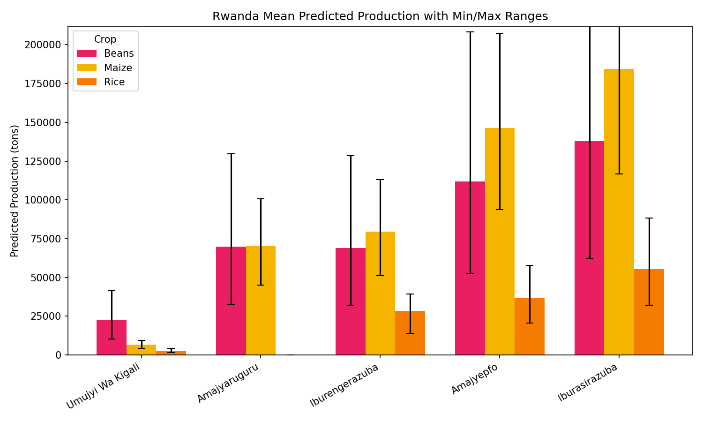
Figure: Mean Predicted Production with Min/Max – Rwanda (Part 1)
Bar chart showing mean predicted production for maize, beans, and rice with min/max ranges.
Maize Maps

Regional Maize Yield Forecasts
In March 2026, the highest predicted maize yield in Rwanda is in Amajyaruguru at 1.74 MgT/ha, while the lowest is in Umujyi Wa Kigali at 0.97 MgT/ha, indicating notable regional variation with generally above average yields in the northwest.

Regional Maize Yield Anomaly
In March 2026, all visible regions in Rwanda, including Amajyaruguru, Iburengerazuba, and Iburasirazuba, show a slight negative maize yield anomaly of approximately -0.01 MgT/ha, indicating below-average yields with no extreme variations across the map.
Rice Maps

Regional Rice Yield Forecasts
In March 2026, the highest predicted rice yield is in the western region of Iburengerazuba at 5.61 MgT/ha, while the lowest is in the central Umujyi Wa Kigali region at 3.66 MgT/ha, indicating a notable yield gradient from west to central Rwanda.

Regional Rice Yield Anomaly
In March 2026, the Ibureragerazuba region in Rwanda showed the highest positive rice yield anomaly at +0.54 MgT/ha, while Iburasirazuba experienced the lowest yield with a negative anomaly of -0.37 MgT/ha, indicating significant regional variation in rice production.
Beans Maps

Regional Beans Yield Forecasts
In March 2026, Umujyi wa Kigali is the top-performing region for beans yield in Rwanda with 1.69 MgT/ha, while Iburasirazuba shows the lowest yield at 0.53 MgT/ha, highlighting a significant regional variation in bean production.

Regional Beans Yield Anomaly
In March 2026, Rwanda's bean yield anomaly map shows predominantly negative anomalies across most regions, highlighted by the widespread red shading indicating below-average yields near 0.000 MT/ha. The Umujyi Wa Kigali region stands out with a slight positive anomaly of 0.01 MT/ha, representing the top-performing area in bean yield.
Production Narrative
The total cultivated area varies by region, with beans grown over 79543 to 259944 hectares, maize from 6806 to 132579 hectares, and rice between 697 and 13588 hectares. Beans production is highest in Iburasirazuba with mean predicted production about 137,770 tons followed by Amajyepfo (111,948 tons) and Iburengerazuba (69,083 tons). Maize production leads in Iburasirazuba at 184,285 tons, Amajyepfo (146,309 tons), and Amajyaruguru (70,590 tons). Rice production is top in Iburasirazuba with 55,439 tons, followed by Amajyepfo (36,846 tons) and Iburengerazuba (28,532 tons). Despite stable trends, rice shows the highest uncertainty in yield and production due to high standard errors, particularly in Iburengerazuba. Maize and beans trends remain stable with less pronounced uncertainties. Overall, maize is the top-performing crop by production volume, especially in Iburasirazuba and Amajyepfo regions.
United Republic Of Tanzania

Figure: Agricultural Calendar – United Republic Of Tanzania
Tanzania is in the active Msimu season (November 2025 – July 2026), with the Masika season (March – August 2026) beginning this month. The prediction month is March 2026. Msimu harvest is expected between May and July, while Masika harvest will follow from July to August 2026.
Regional Crop Conditions Summary
Bean crop conditions are stable across regions with predicted yield anomalies near zero, indicating no significant stress or improvement; notable yields range from 0.25 MgT/ha in Simiyu to 1.11 MgT/ha in Shinyanga. Maize conditions remain stable but show slight negative yield anomalies in some regions such as Dar Es Salaam (-0.01) and Mara (-0.01), with yields ranging between 0.57 MgT/ha in Dodoma and 2.04 MgT/ha in Kilimanjaro. Rice exhibits some negative anomalies in coastal and island regions, with yields fluctuating notably from 0.79 MgT/ha in Kaskazini Unguja to 3.29 MgT/ha in Geita. There are no flagged alarming conditions overall, but some coastal and island zones do show declining yield anomalies, especially for rice. Trend across all crops is stable.

Figure: Mean Predicted Production with Min/Max – United Republic Of Tanzania (Part 1)
Bar chart showing mean predicted production for maize, beans, and rice with min/max ranges.

Figure: Mean Predicted Production with Min/Max – United Republic Of Tanzania (Part 2)
Bar chart showing mean predicted production for maize, beans, and rice with min/max ranges.

Figure: Mean Predicted Production with Min/Max – United Republic Of Tanzania (Part 3)
Bar chart showing mean predicted production for maize, beans, and rice with min/max ranges.

Figure: Mean Predicted Production with Min/Max – United Republic Of Tanzania (Part 4)
Bar chart showing mean predicted production for maize, beans, and rice with min/max ranges.

Figure: Mean Predicted Production with Min/Max – United Republic Of Tanzania (Part 5)
Bar chart showing mean predicted production for maize, beans, and rice with min/max ranges.
Maize Maps — Masika
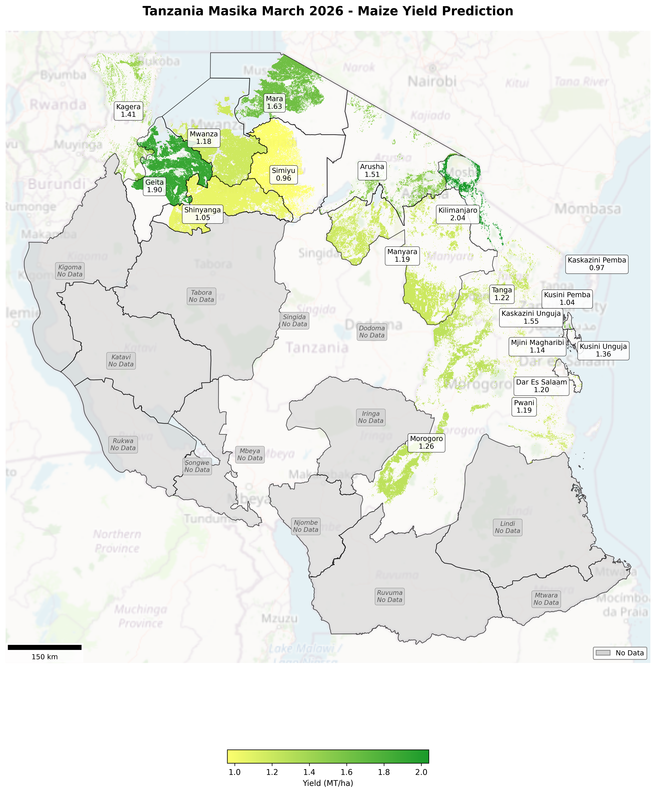
Regional Maize Yield Forecasts — Masika
In March 2026, Kilimanjaro leads Tanzania's Masika maize yield prediction at 2.04 MgT/ha, with Geita following at 1.90 MgT/ha, indicating above-average performance. Simiyu and Kaskazini Pemba represent the lowest yields, slightly below average at 0.96 and 0.97 MgT/ha respectively.
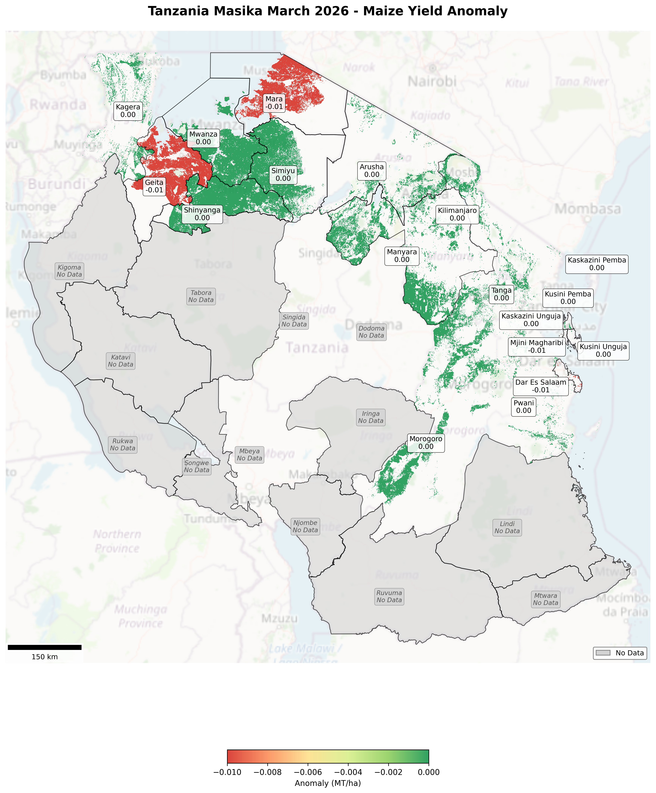
Regional Maize Yield Anomaly — Masika
In March 2026, Tanzanian regions Mara, Geita, Mjini Magharibi, and Dar Es Salaam show slight negative maize yield anomalies of -0.01 MgT/ha, while regions like Simiyu and Shinyanga exhibit neutral to no anomalies. The most pronounced negative deviations are concentrated in northern and coastal parts.
Maize Maps — Msimu
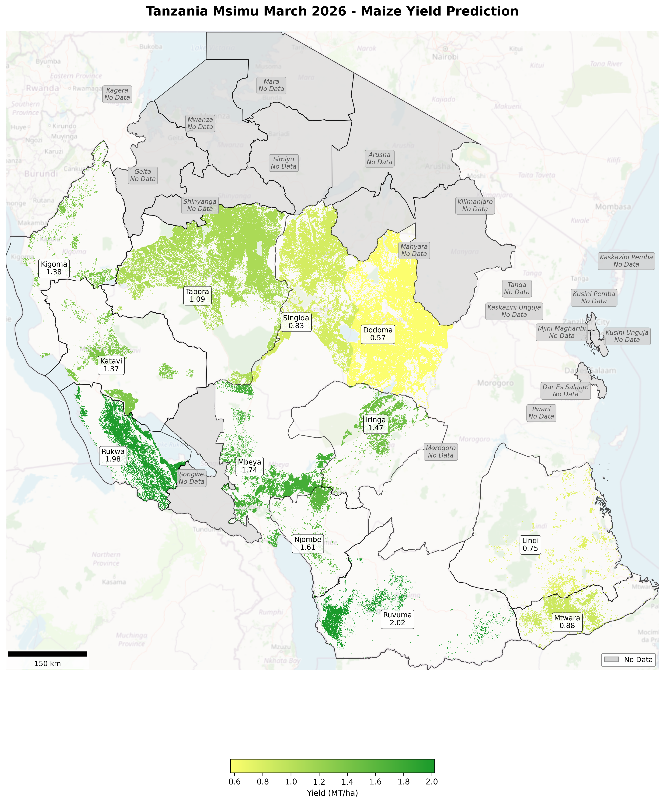
Regional Maize Yield Forecasts — Msimu
In March 2026, Tanzania's Msimu maize yield prediction shows Ruvuma with the highest yield at 2.02 MgT/ha, while Dodoma has the lowest at 0.57 MgT/ha, highlighting a significant yield gradient from south to central regions. Several northern regions report no data.
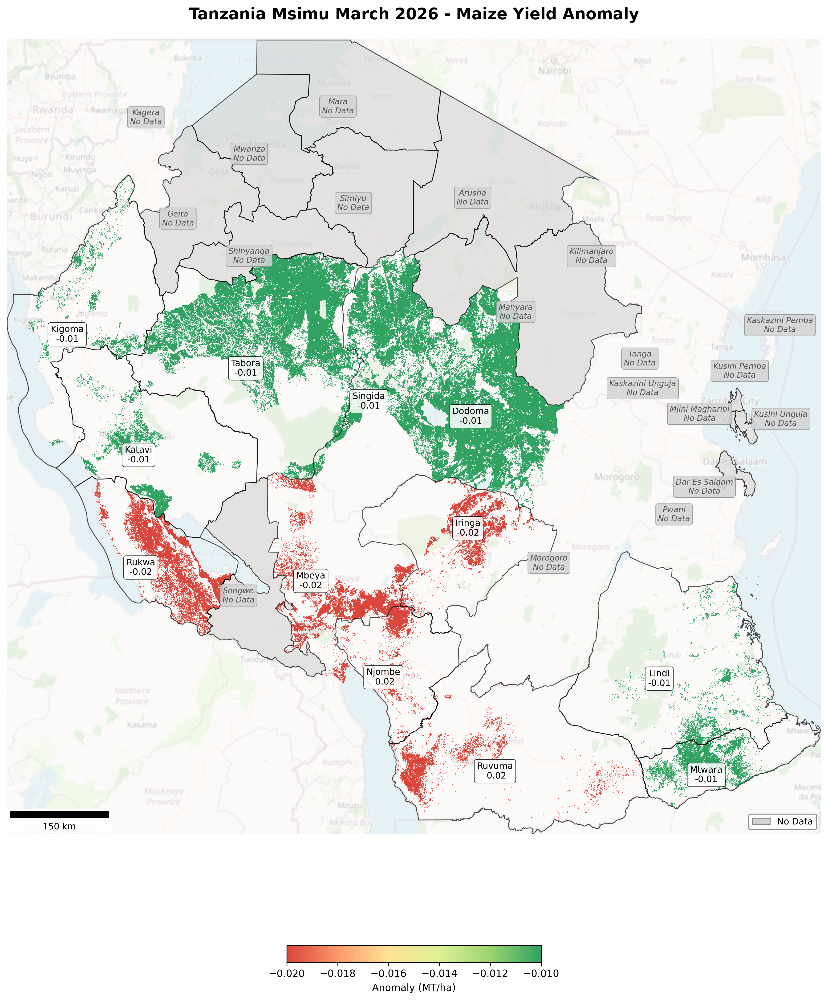
Regional Maize Yield Anomaly — Msimu
In March 2026, Tanzania's Msimu maize yield anomalies show the highest negative deviations of -0.02 MgT/ha in Rukwa, Mbeya, Njombe, Iringa, and Ruvuma regions, while Kigoma, Tabora, Singida, Dodoma, Katavi, Lindi, and Mtwara exhibit smaller negative anomalies of -0.01 MgT/ha. Several regions show no data coverage.
Rice Maps — Masika
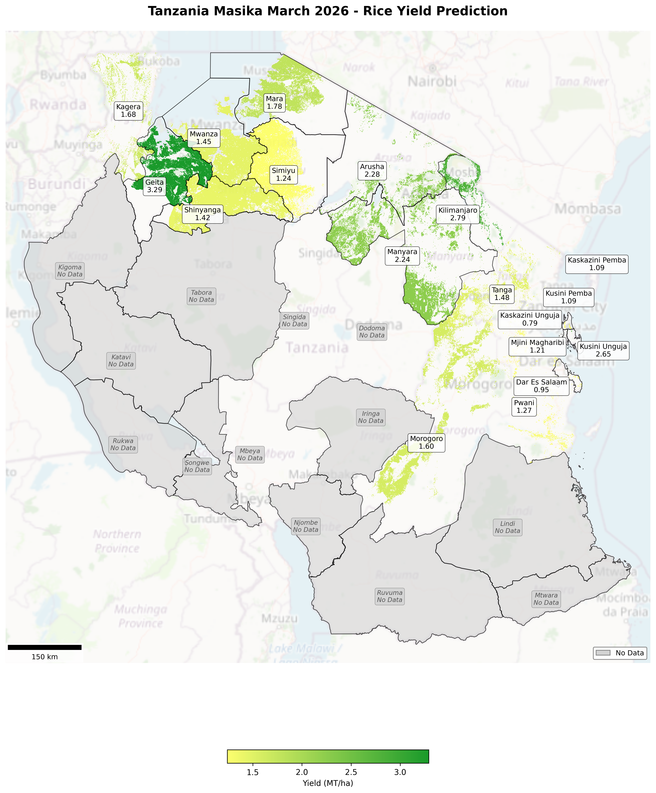
Regional Rice Yield Forecasts — Masika
In March 2026, Tanzania's Masika rice yield prediction shows the highest yield in Geita at 3.29 MgT/ha, while the lowest is in Kaskazini Unguja at 0.79 MgT/ha. Northern regions like Arusha and Kilimanjaro also show above-average yields above 2.2 MgT/ha, indicating strong production in the northwest and northeast.
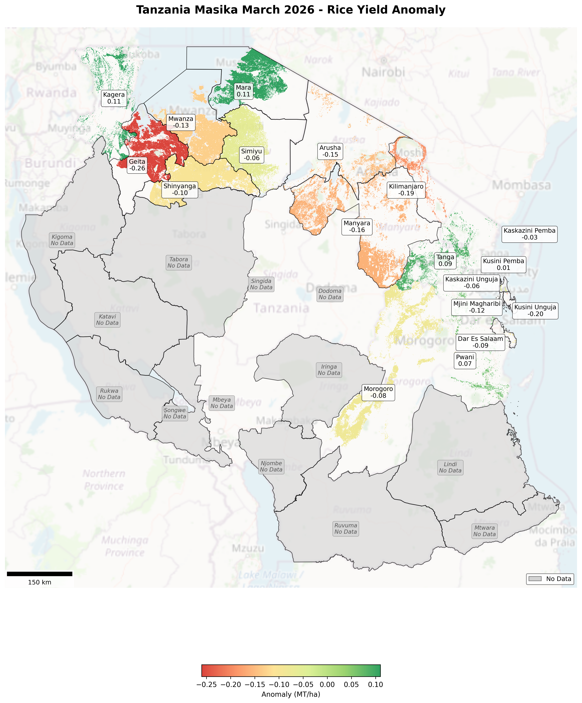
Regional Rice Yield Anomaly — Masika
In March 2026, Tanzania's Masika season rice yield anomaly shows Geita with the lowest yield at -0.26 MgT/ha, while Kagera and Mara exhibit the highest positive anomalies at 0.11 MgT/ha. Notable negative anomalies also appear in Kusini Unguja (-0.20 MgT/ha) and Kilimanjaro (-0.19 MgT/ha).
Rice Maps — Msimu
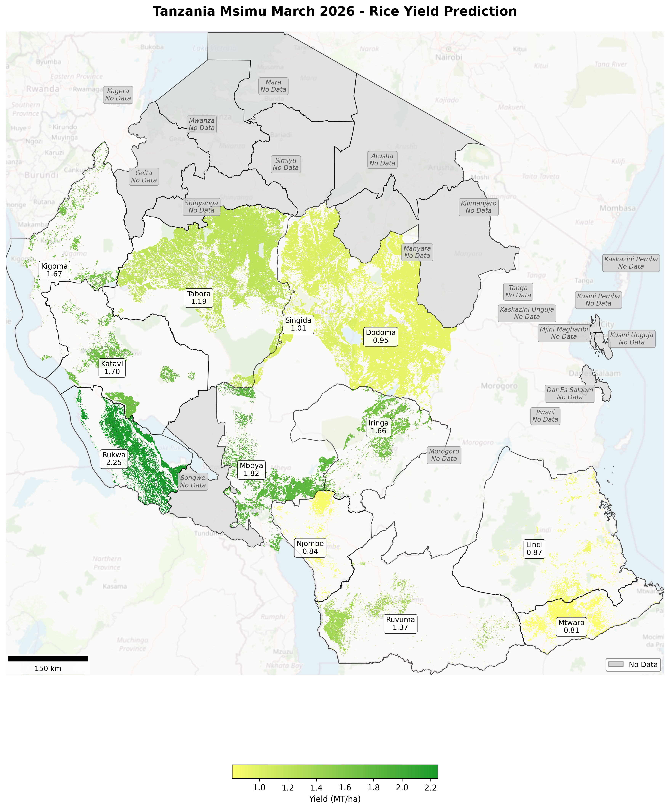
Regional Rice Yield Forecasts — Msimu
In March 2026, Tanzania's rice yield prediction for the Msimu season shows the highest yields in Rukwa (2.25 MgT/ha) and Mbeya (1.82 MgT/ha), while the lowest yields are in Mtwara (0.81 MgT/ha) and Lindi (0.87 MgT/ha), indicating a notable south-west to south-east gradient in productivity. Several northern and coastal regions have no data available.
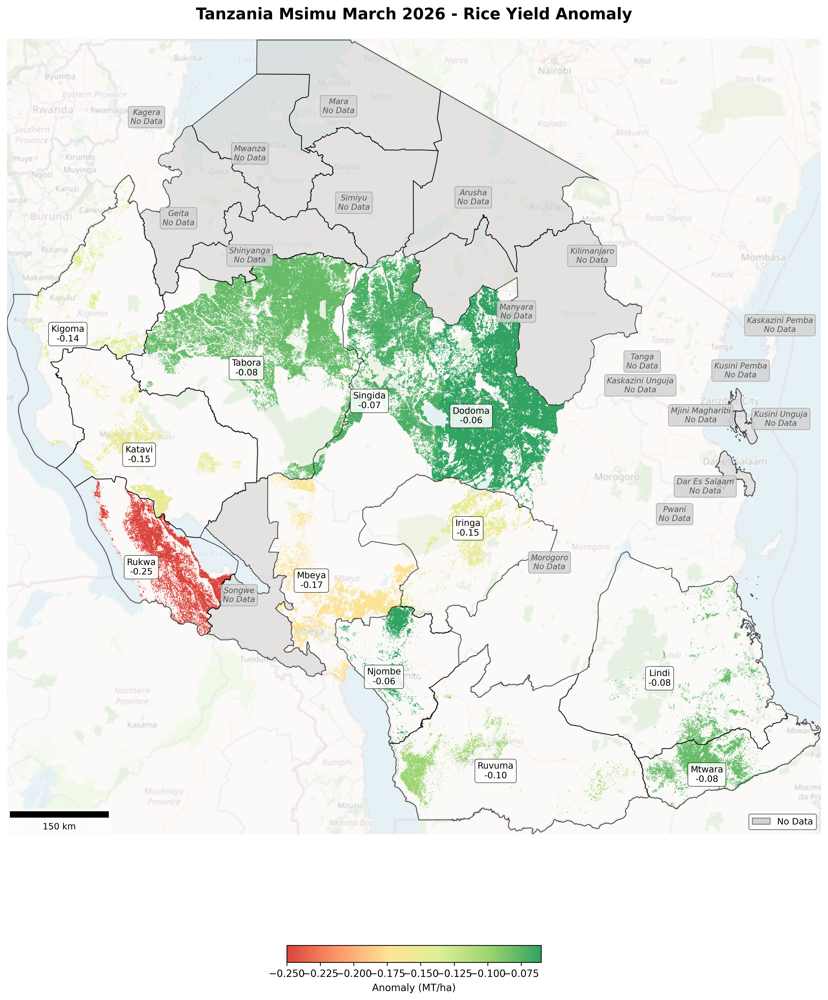
Regional Rice Yield Anomaly — Msimu
In March 2026, Tanzania's rice yield anomalies during the Msimu season show mostly negative values, with Rukwa experiencing the largest negative anomaly of -0.25 MgT/ha. Other notable low-performing regions include Mbeya (-0.17 MgT/ha) and Iringa (-0.15 MgT/ha), while the northern and eastern areas display smaller negative anomalies around -0.06 to -0.08 MgT/ha.
Beans Maps — Masika
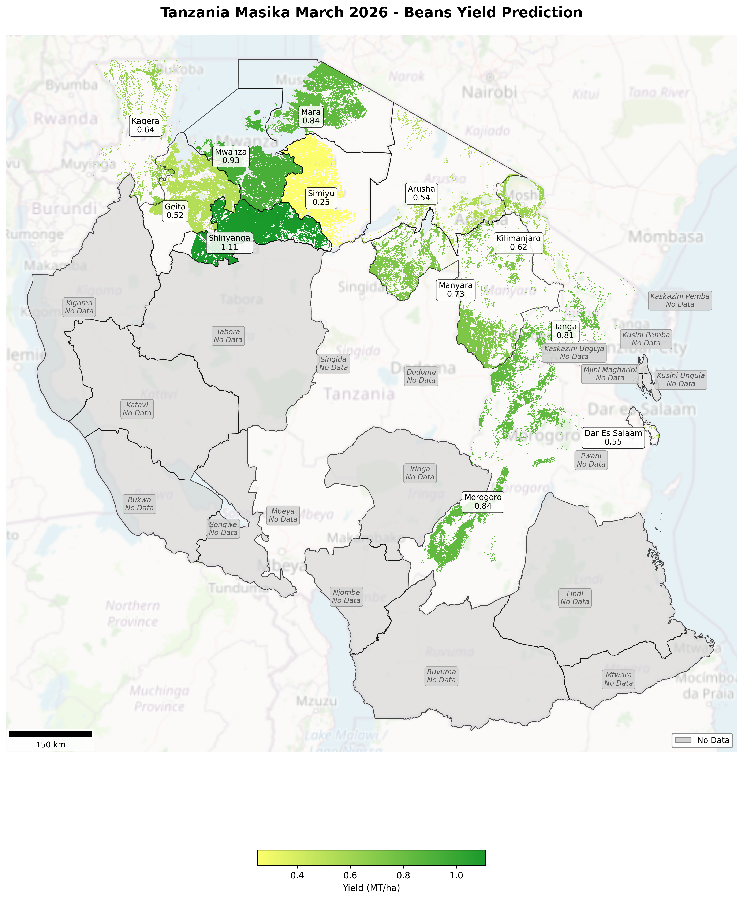
Regional Beans Yield Forecasts — Masika
In March 2026, Shinyanga region leads bean yield predictions with 1.11 MgT/ha, while Simiyu shows the lowest at 0.25 MgT/ha, indicating a significant yield disparity during the Masika season. Most regions exhibit moderate to high yields, with several showing values above 0.6 MgT/ha.
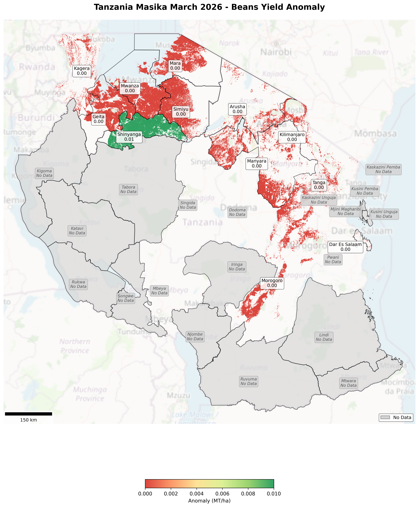
Regional Beans Yield Anomaly — Masika
In March 2026, Shinyanga exhibits the highest positive bean yield anomaly at 0.01 MgT/ha during the Masika season, while regions including Mara, Simiyu, and Mwanza show prevalent negative anomalies. Kilimanjaro and Tanga are among the regions with significant negative yield deviations from the average.
Beans Maps — Msimu
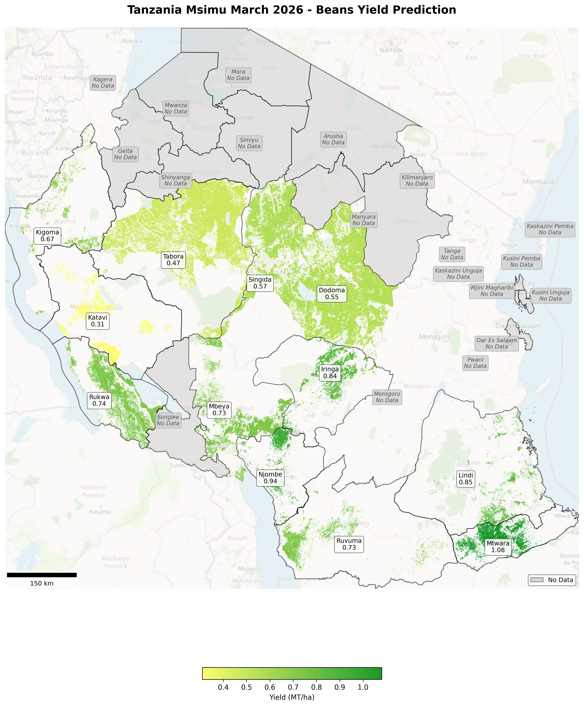
Regional Beans Yield Forecasts — Msimu
In March 2026, the highest predicted beans yield in Tanzania's Msimu season is in Mtwara at 1.08 MgT/ha, while the lowest among labeled regions is Katavi at 0.31 MgT/ha. Several northern and eastern regions show no data available for yield predictions.
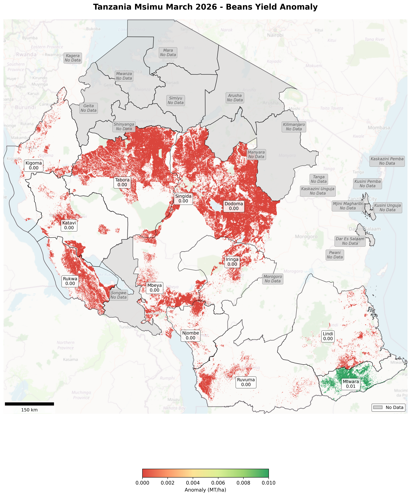
Regional Beans Yield Anomaly — Msimu
In March 2026, Tanzania's Msimu season beans yield anomaly shows predominantly negative anomalies around 0.00 MgT/ha in regions like Kigoma, Tabora, Singida, and Dodoma, while Mtwara exhibits a slight positive anomaly of 0.01 MgT/ha, marking the highest yield anomaly on the map. Large portions of the north and coastal regions have no data available.
Production Narrative
Bean production areas vary significantly with the largest areas in Tabora (41,338 ha) and Simiyu (19,676 ha) contributing mean productions of 19,429 and 4,919 tons respectively. Maize leads in production, with top-producing regions being Tabora (mean 317,837 tons), Shinyanga (156,832 tons), and Morogoro (134,536 tons) over large cultivated areas. Rice production is more concentrated, with Geita (mean 68,327 tons), Rukwa (44,829 tons), and Manyara (45,924 tons) as top regions. Production uncertainties are higher for rice due to large yield variability and negative anomalies in some coastal and island districts, while bean and maize trends remain stable without significant fluctuations.
Zambia

Figure: Agricultural Calendar – Zambia
Zambia is currently in the main crop season which runs from November to May. As of March 2026, crops are approaching harvest time, which begins in April and continues through May across all regions.
Regional Crop Conditions Summary
Beans exhibit stable conditions with all 11 provinces showing zero predicted yield anomalies and percentage anomalies ranging narrowly from 0.35% to 0.7%, indicating no alarming deviations. Predicted yields range from 0.46 to 0.67 Mg/ha, with North-Western province leading in yield at 0.67 Mg/ha. Maize also shows stable conditions across all regions but displays slight negative yield anomalies between -0.94% and -0.35%, with the lowest predicted yield in Western province at 1.32 Mg/ha and highest in Muchinga at 3.38 Mg/ha. Rice conditions are stable but with consistent negative yield anomalies from -10.11% in Eastern to -6.52% in North-Western, signaling mild but notable decreases; yields range from 0.77 Mg/ha in Western to 1.45 Mg/ha in Muchinga. No severe adverse conditions or trends are observed for all crops, with trends marked stable.
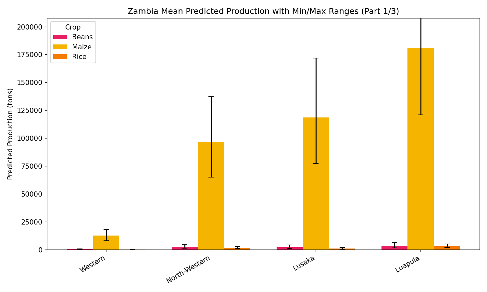
Figure: Mean Predicted Production with Min/Max – Zambia (Part 1)
Bar chart showing mean predicted production for maize, beans, and rice with min/max ranges.
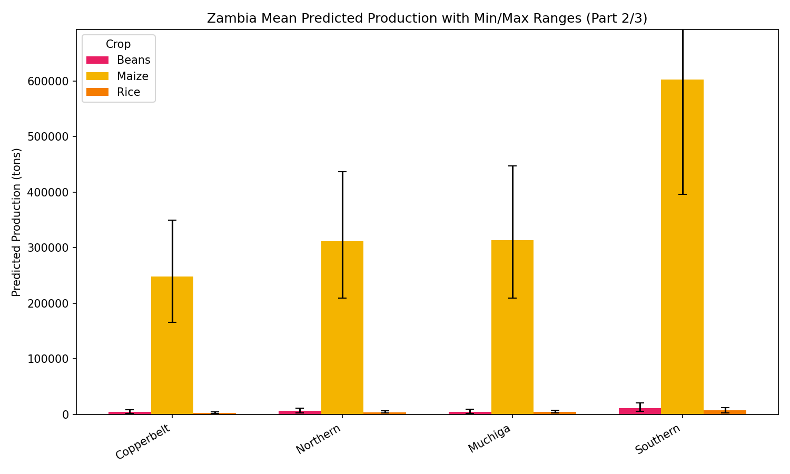
Figure: Mean Predicted Production with Min/Max – Zambia (Part 2)
Bar chart showing mean predicted production for maize, beans, and rice with min/max ranges.
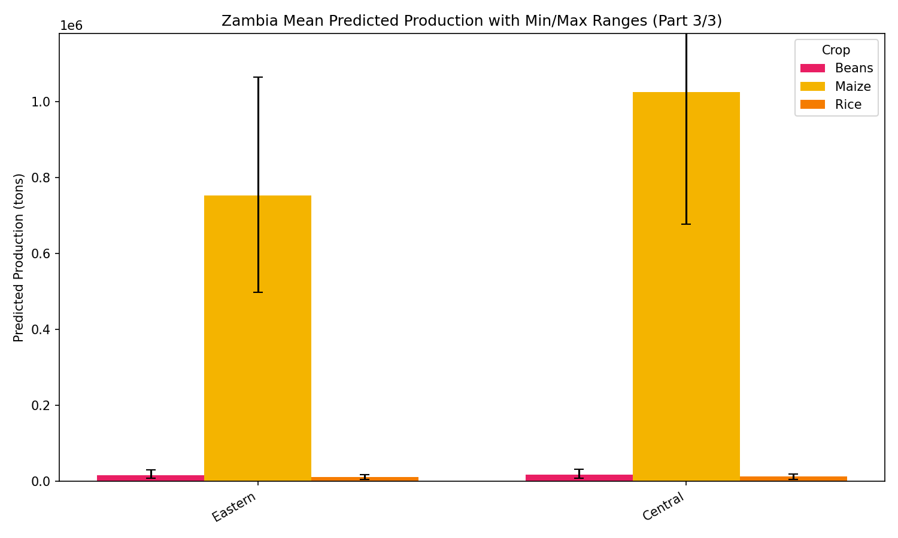
Figure: Mean Predicted Production with Min/Max – Zambia (Part 3)
Bar chart showing mean predicted production for maize, beans, and rice with min/max ranges.
Maize Maps
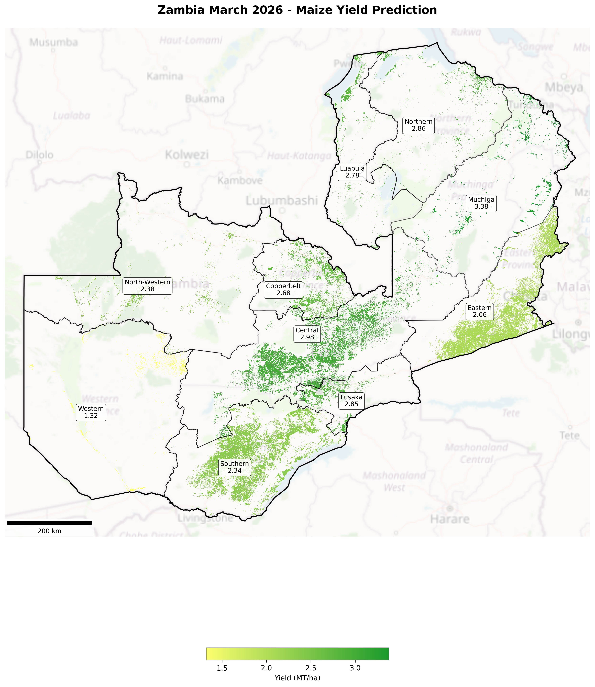
Regional Maize Yield Forecasts
In March 2026, Muchinga exhibits the highest predicted maize yield in Zambia at 3.38 MgT/ha, while Western region shows the lowest yield at 1.32 MgT/ha. Yields generally range from 1.32 to 3.38 MgT/ha, with high variability across provinces.
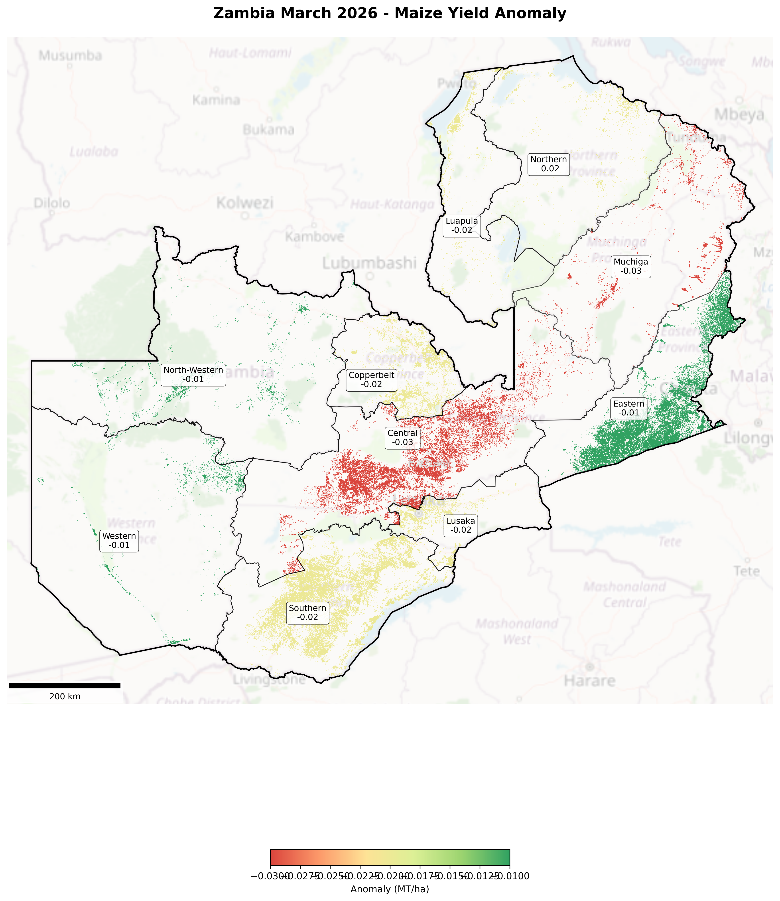
Regional Maize Yield Anomaly
In March 2026, Muchinga and Central provinces in Zambia experienced the lowest maize yield anomalies at -0.03 MgT/ha, indicating significant negative deviations. Eastern province showed positive yield anomalies, reaching up to +0.01 MgT/ha, marking it as the top-performing region.
Rice Maps
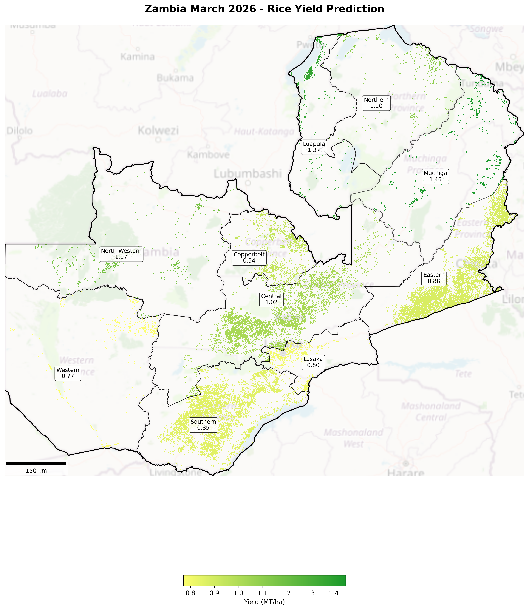
Regional Rice Yield Forecasts
In March 2026, Muchinga leads Zambia in rice yield prediction with an above-average 1.45 MgT/ha, while Western records the lowest yield at 0.77 MgT/ha, indicating significant regional disparities. Luapula and North-Western also perform well with yields above 1.1 MgT/ha.
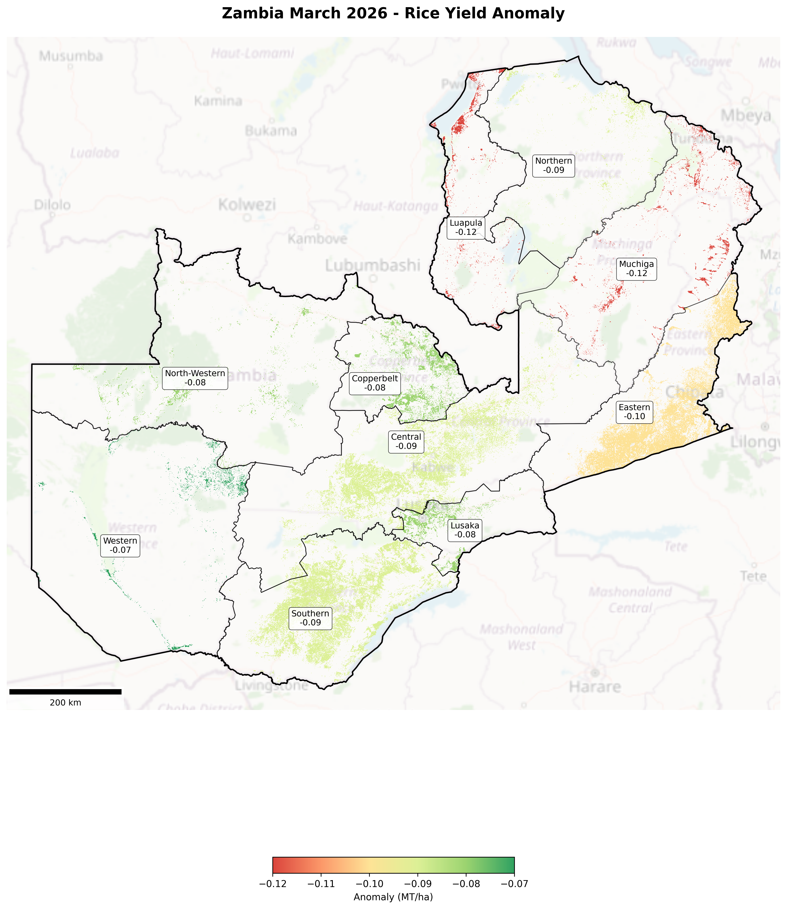
Regional Rice Yield Anomaly
In March 2026, Zambia's rice yield anomaly shows predominantly negative values across all regions, with Muchinga and Luapula experiencing the lowest anomalies of -0.12 MgT/ha, indicating significant below-average rice yields. The Western region exhibits the highest anomaly at -0.07 MgT/ha, representing a less severe but still negative deviation.
Beans Maps
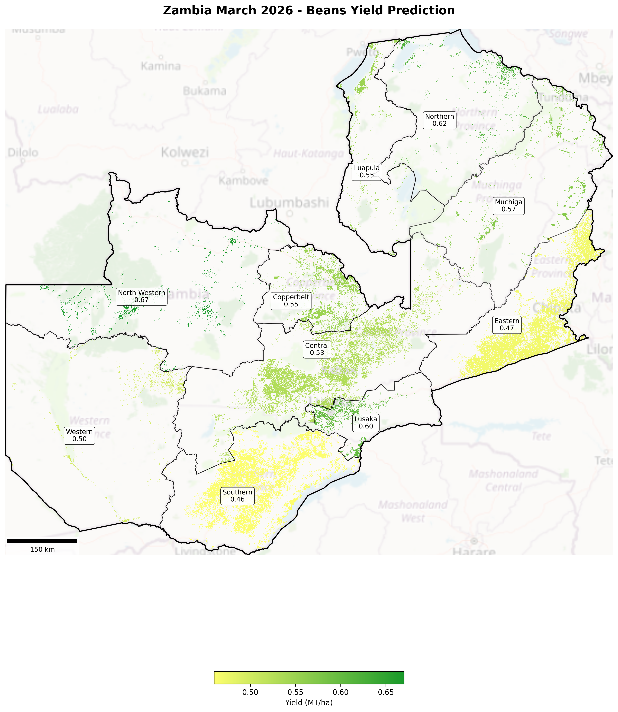
Regional Beans Yield Forecasts
In March 2026, Zambia's bean yield prediction shows North-Western region leading with the highest yield at 0.67 MgT/ha, while Southern region has the lowest at 0.46 MgT/ha, indicating a notable yield gradient across the country. The map highlights substantial regional variability, with yields ranging from 0.46 to 0.67 MgT/ha.
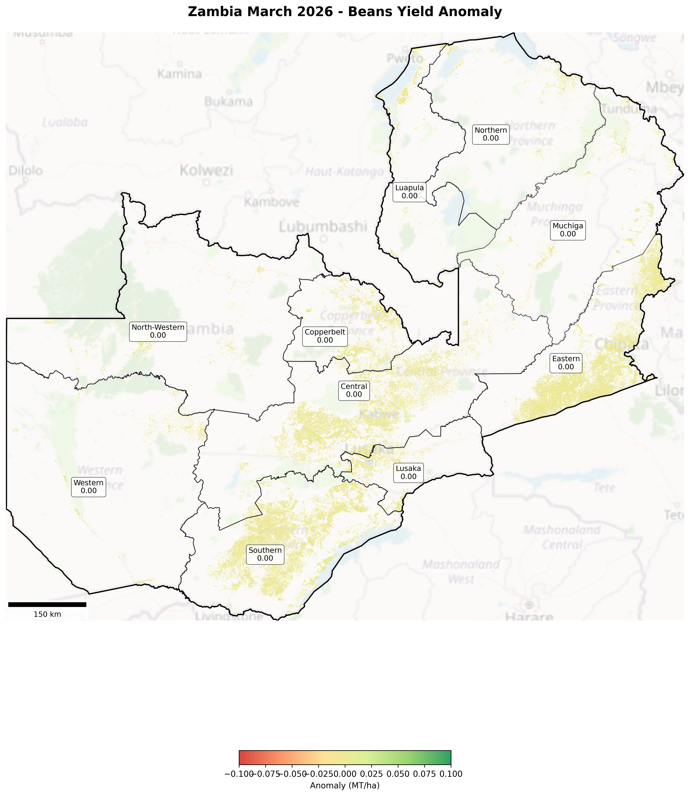
Regional Beans Yield Anomaly
The Zambia March 2026 beans yield anomaly map shows predominantly neutral conditions across all regions, with no significant positive or negative anomalies above or below 0.00 MgT/ha. No extremes or regional yield deviations are evident.
Production Narrative
Maize is the top-performing crop with the largest cultivation area, notably in Eastern (365,683 ha), Central (344,294 ha), and Southern (257,292 ha) provinces, resulting in mean predicted productions of approximately 753,307 tons, 1,025,996 tons, and 602,063 tons respectively. Beans have moderate cultivation areas, with Eastern (33,990 ha, mean production 15,975 tons), Central (32,002 ha, 16,961 tons), and Southern (23,915 ha, 11,001 tons) as leading producers. Rice is cultivated on smaller areas but shows the highest yields in Luapula (1.37 Mg/ha, 3,100 tons mean production), Muchinga (1.45 Mg/ha, 4,678 tons), and Central (1.02 Mg/ha, 12,234 tons). Production trends are stable with minor uncertainties due to low yield anomalies, particularly in rice where negative anomalies suggest a watchful stance for possible future declines.
Kenya

Figure: Agricultural Calendar – Kenya
Kenya is currently in the Long Rains season (February to August), with March marking the prediction period for the ongoing planting stage. Harvests for maize, beans, and rice are expected to begin from July through August, following the maturation of crops planted during this season.
Regional Crop Conditions Summary
Bean crops across Kenya show a stable trend with mostly neutral predicted yield anomalies, ranging from -0.47% (Bomet) to +0.8% (Kajiado), indicating generally stable production outlook. No counties register alarming negative anomalies for beans; however, yields remain low in arid zones such as Kajiado (0.22 Mg/ha) and Marsabit (0.14 Mg/ha). Maize conditions are stable overall but present mild negative yield anomalies with the largest deficits in arid and semi-arid counties like Marsabit (-3.01%) and Mandera (-2.56%). Rice shows stable but somewhat negative yield anomalies in most counties, with exceptions such as Vihiga showing a positive anomaly of +9.82%, though with small production area. Rice yields vary widely from as low as 0.32 Mg/ha (Nyandarua) to 4.41 Mg/ha (Kirinyaga) with notable declines around Kirinyaga (-7.56%) and Baringo (-7.53%). The data highlight localized stress particularly for rice and maize in dry regions, whereas beans are largely stable.
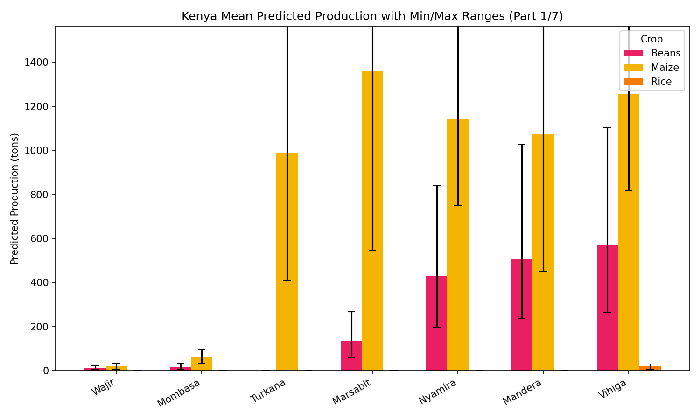
Figure: Mean Predicted Production with Min/Max – Kenya (Part 1)
Bar chart showing mean predicted production for maize, beans, and rice with min/max ranges.
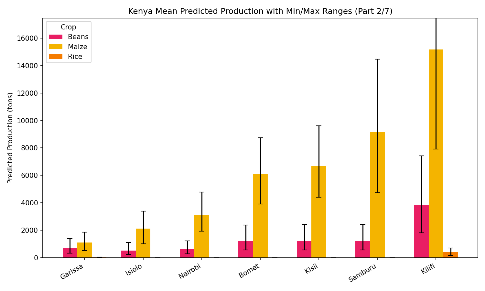
Figure: Mean Predicted Production with Min/Max – Kenya (Part 2)
Bar chart showing mean predicted production for maize, beans, and rice with min/max ranges.
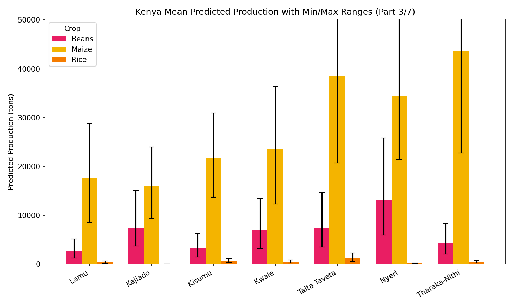
Figure: Mean Predicted Production with Min/Max – Kenya (Part 3)
Bar chart showing mean predicted production for maize, beans, and rice with min/max ranges.
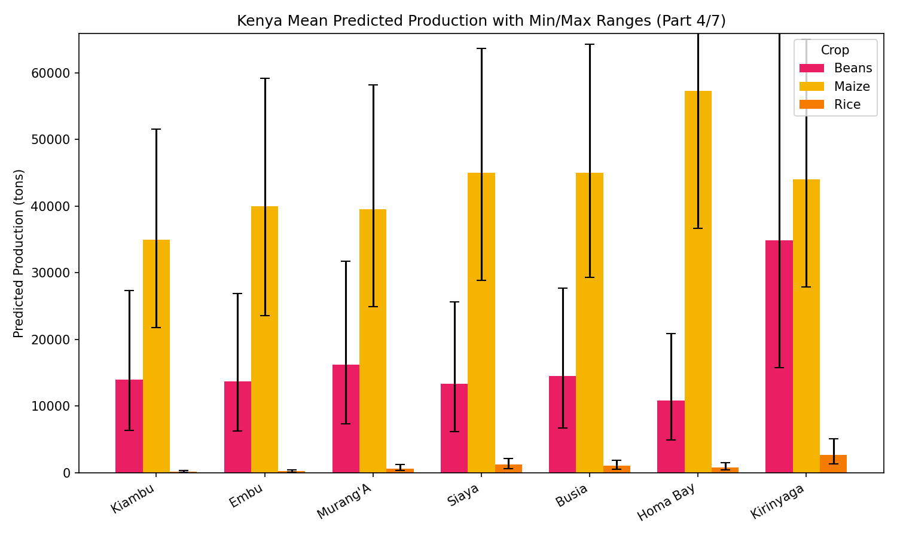
Figure: Mean Predicted Production with Min/Max – Kenya (Part 4)
Bar chart showing mean predicted production for maize, beans, and rice with min/max ranges.
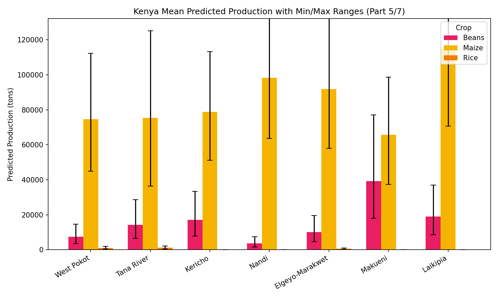
Figure: Mean Predicted Production with Min/Max – Kenya (Part 5)
Bar chart showing mean predicted production for maize, beans, and rice with min/max ranges.
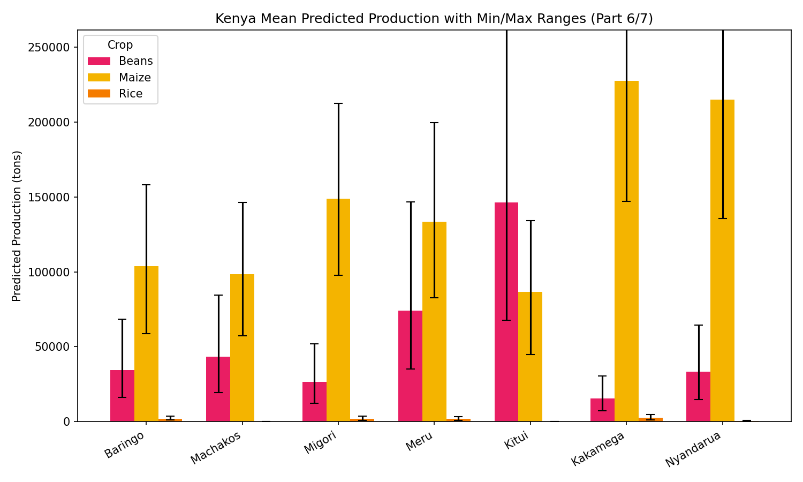
Figure: Mean Predicted Production with Min/Max – Kenya (Part 6)
Bar chart showing mean predicted production for maize, beans, and rice with min/max ranges.
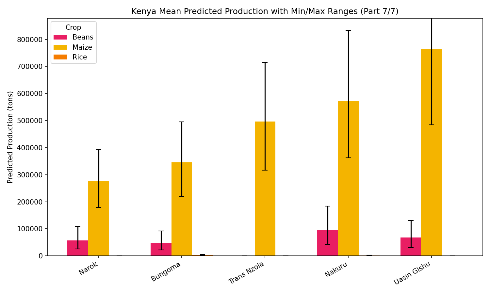
Figure: Mean Predicted Production with Min/Max – Kenya (Part 7)
Bar chart showing mean predicted production for maize, beans, and rice with min/max ranges.
Maize Maps
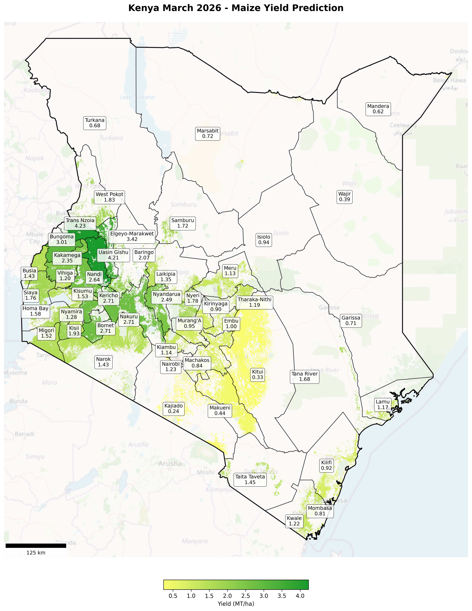
Regional Maize Yield Forecasts
In March 2026, Trans Nzoia leads with the highest maize yield prediction at 4.23 MgT/ha, while Kajiado shows the lowest yield at 0.24 MgT/ha, indicating significant regional variation across Kenya.
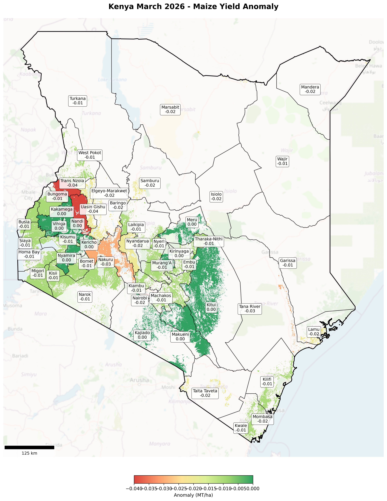
Regional Maize Yield Anomaly
In March 2026, Kenya's maize yield anomalies show largely negative deviations, with Trans Nzoia and Uasin Gishu experiencing the lowest anomalies at -0.04 MgT/ha, while regions like Meru, Vihiga, and Makueni maintain neutral anomalies at 0.00 MgT/ha. The most extreme negative anomaly recorded is -0.04 MgT/ha in the western region.
Rice Maps
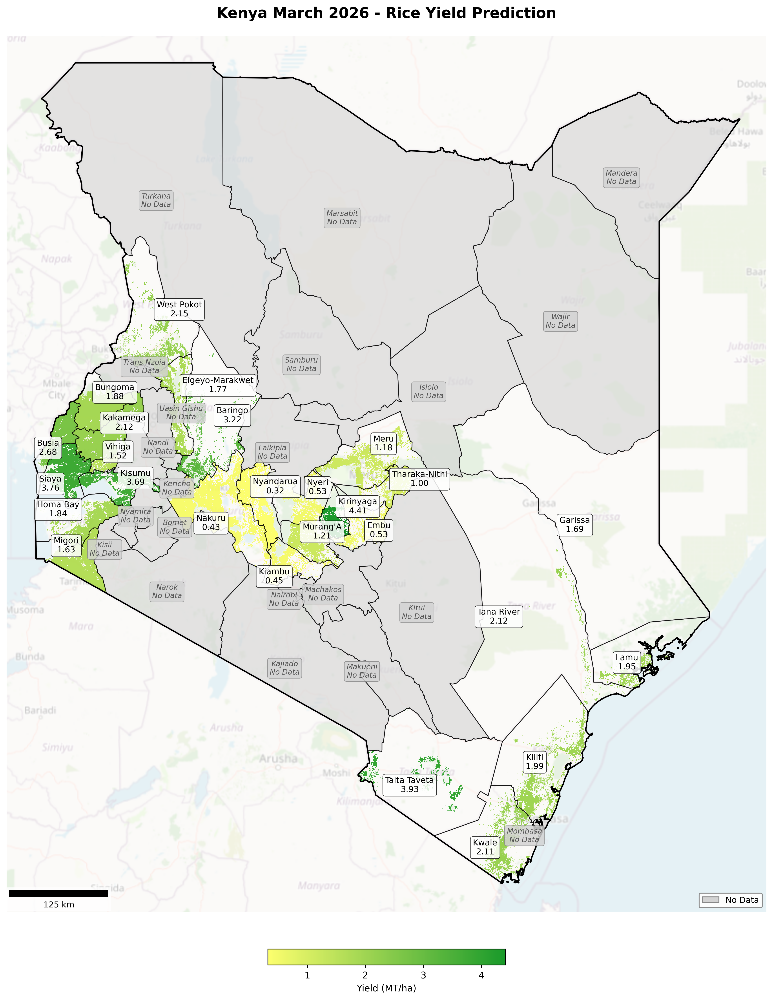
Regional Rice Yield Forecasts
In March 2026, Kirinyaga leads Kenya's rice yield prediction with 4.41 MgT/ha, while Nyandarua shows the lowest yield at 0.32 MgT/ha. Most regions with data show yields above 1 MgT/ha, highlighting significant regional variation.
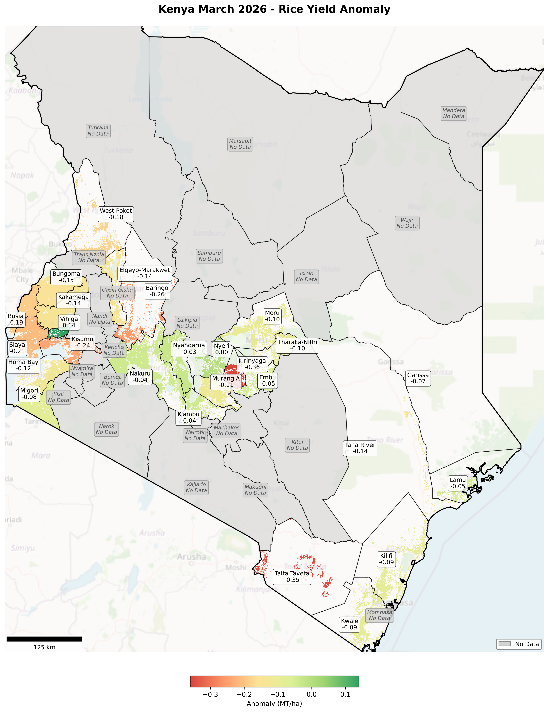
Regional Rice Yield Anomaly
In March 2026, Kenya's rice yield anomaly shows predominantly negative values, with Kirinyaga (-0.36 MgT/ha) and Taita Taveta (-0.35 MgT/ha) as the lowest performers, while Vihiga was the only region with a positive anomaly of 0.14 MgT/ha, indicating slightly above-average yields.
Beans Maps
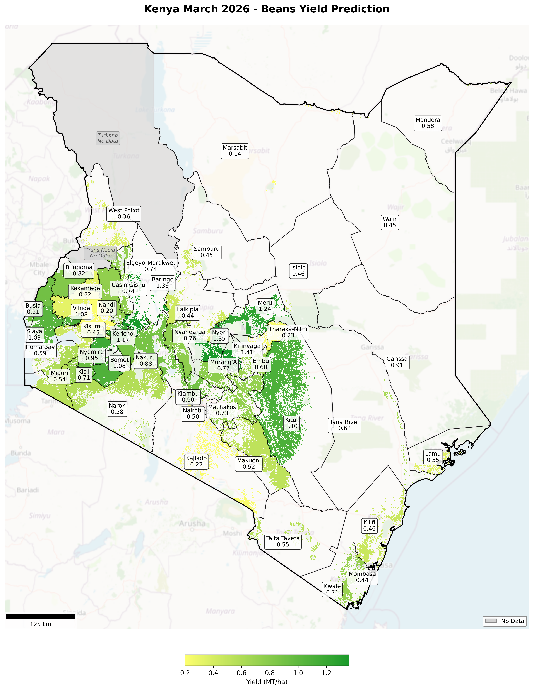
Regional Beans Yield Forecasts
In March 2026, Baringo is predicted to have the highest beans yield in Kenya at 1.36 MgT/ha, while Marsabit shows one of the lowest yields at 0.14 MgT/ha. Significant yield variation is observed across regions, with most areas ranging between 0.2 and 1.4 MgT/ha.
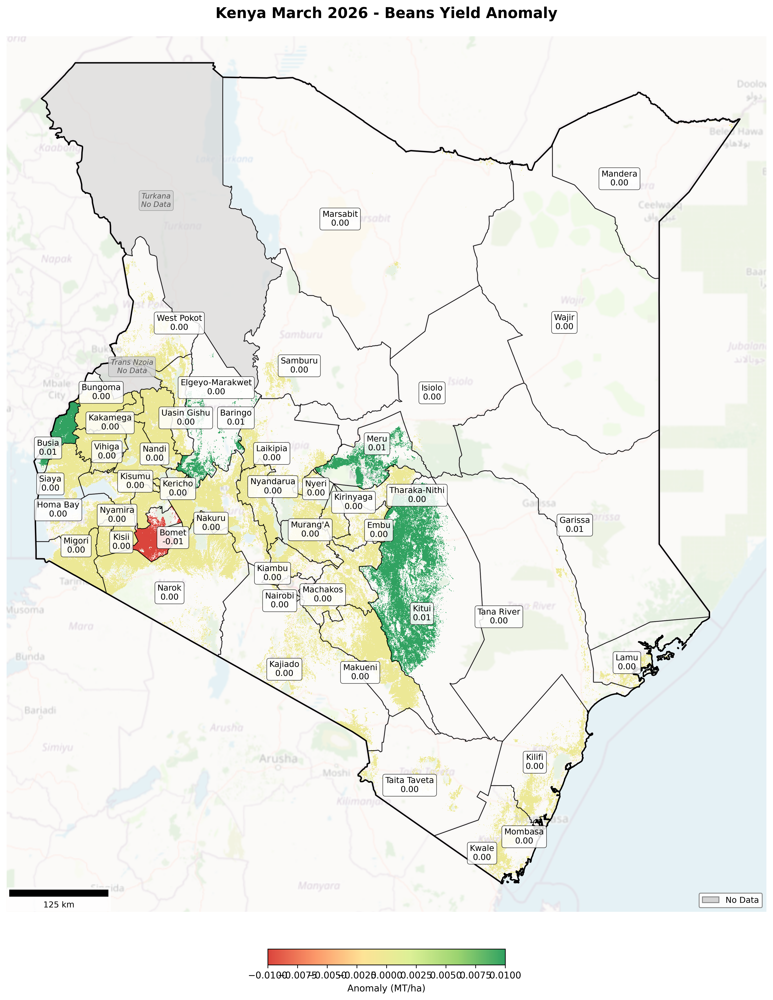
Regional Beans Yield Anomaly
In March 2026, Bomet shows the lowest beans yield anomaly with -0.01 MgT/ha, while Busia, Meru, Kitui, and Garissa exhibit top positive anomalies of +0.01 MgT/ha. Several northern counties show no data or zero anomaly, indicating no significant yield changes.
Production Narrative
The production forecast for the Long Rains season highlights maize as the top-performing crop by volume, with highest predicted production in counties such as Nakuru (mean production ~571,946 tons), Uasin Gishu (~763,526 tons), and Bungoma (~345,178 tons). Beans show their largest mean production in Kitui (~146,196 tons), Nakuru (~93,863 tons), and Uasin Gishu (~67,825 tons), reflecting stable yield trends. Rice production is lower comparatively but significant in Bungoma (~2,703 tons), Kirinyaga (~2,703 tons), and Baringo (~2,025 tons), with some variability and notable yield declines in several counties. Production uncertainties arise mostly from yield variability and negative anomalies in arid counties impacting maize and rice forecasts, while bean production remains more consistent. Overall, maize leads in production volume and area, with beans maintaining stability and rice showing regional fluctuations requiring localized attention.
Malawi

Figure: Agricultural Calendar – Malawi
Malawi is currently in the main season harvest period, which started in April and will continue through July 2026. Planting occurred from November to January, and the focus this month is on monitoring crop conditions and yield forecasts as the harvest progresses across regions.
Regional Crop Conditions Summary
Crop conditions remain stable across all regions and crops for March 2026. Beans show stable trends with predicted yield anomalies at 0.0 in Central and Northern regions and a slight positive anomaly of 0.54% in the Southern Region. Maize exhibits minor negative yield anomalies between -1.01% and -0.04%, but these remain within stable conditions. Rice has more notable negative yield anomalies ranging from -8.39% in the Southern Region to -10.12% in the Central Region, indicating some concern but overall stable trends without alarming declines. No regions report poor conditions, and all crops maintain a stable trend heading into the harvest.
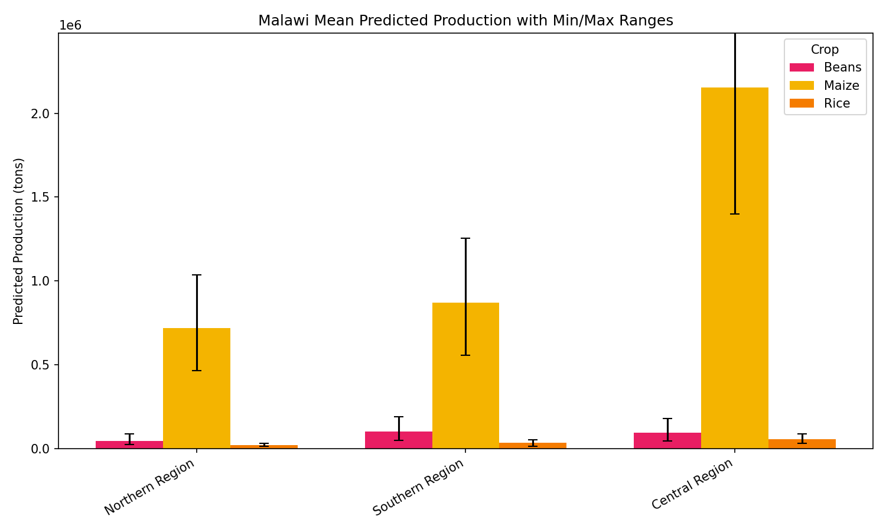
Figure: Mean Predicted Production with Min/Max – Malawi (Part 1)
Bar chart showing mean predicted production for maize, beans, and rice with min/max ranges.
Maize Maps
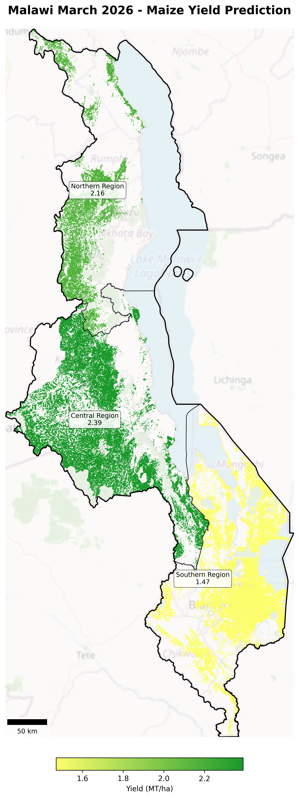
Regional Maize Yield Forecasts
In March 2026, Malawi's Central Region is predicted to have the highest maize yield at 2.39 Mg/ha, while the Southern Region shows the lowest yield at 1.47 Mg/ha, indicating a notable regional yield disparity. The Northern Region has a moderate yield of 2.16 Mg/ha, with yields generally above 2.0 Mg/ha concentrated in the central and northern parts.
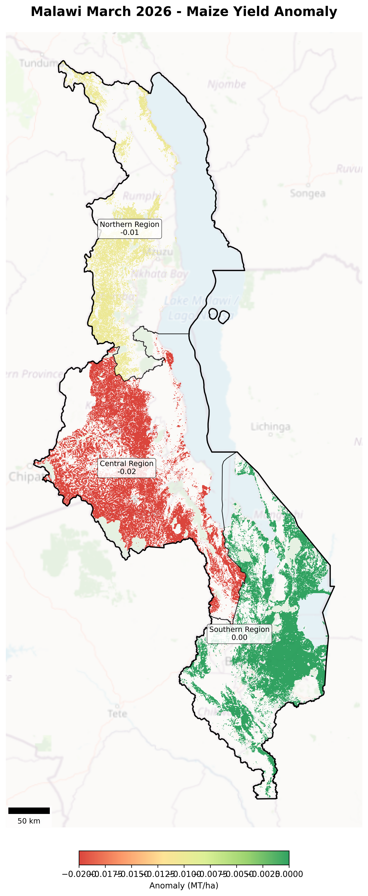
Regional Maize Yield Anomaly
In March 2026, Malawi's Central Region recorded the largest negative maize yield anomaly at -0.02 MgT/ha, while the Southern Region showed near-average yields with a 0.00 MgT/ha anomaly; the Northern Region had a slight negative anomaly of -0.01 MgT/ha. The Central Region's below-average yield represents the most extreme deviation in the country.
Rice Maps
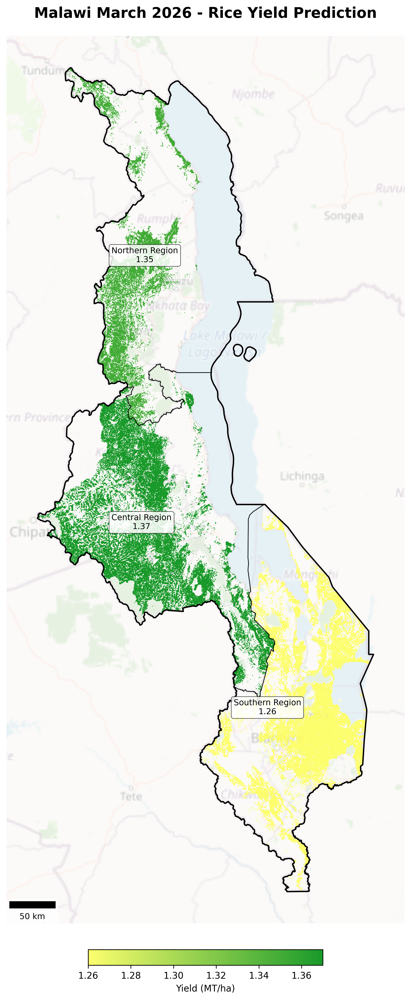
Regional Rice Yield Forecasts
In March 2026, Malawi's Central Region is predicted to have the highest rice yield at 1.37 MT/ha, while the Southern Region shows the lowest at 1.26 MT/ha, indicating a modest yield gradient from north to south.
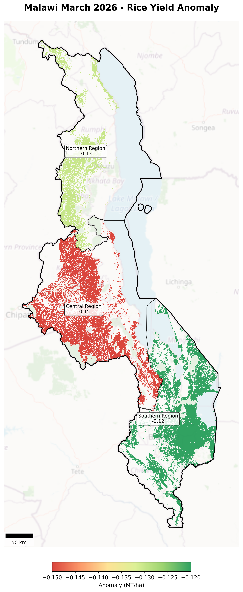
Regional Rice Yield Anomaly
In March 2026, Malawi's rice yield anomaly shows the Central Region with the lowest performance at -0.15 MT/ha, while the Southern Region exhibits the highest anomaly at -0.12 MT/ha; all regions report negative anomalies indicating below-average yields.
Beans Maps
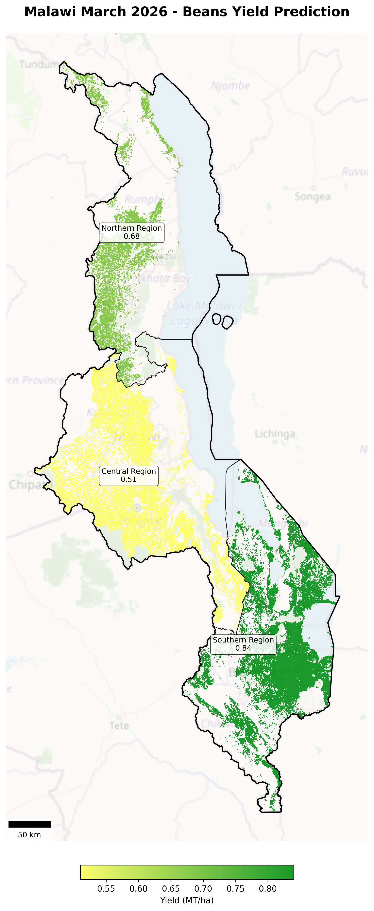
Regional Beans Yield Forecasts
The Southern Region of Malawi is predicted to have the highest beans yield in March 2026 at 0.84 MgT/ha, while the Central Region shows the lowest yield at 0.51 MgT/ha. The Northern Region has a moderate yield prediction of 0.68 MgT/ha, indicating a significant regional variation with the southern area as the top-performing zone.
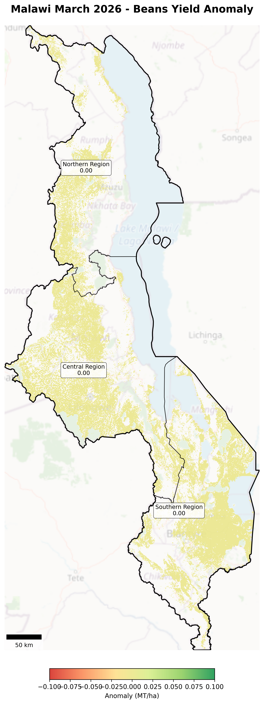
Regional Beans Yield Anomaly
The March 2026 beans yield anomaly in Malawi shows neutral performance across the Northern, Central, and Southern Regions with all at 0.00 MgT/ha. The map indicates no significant positive or negative yield anomalies, highlighting stable average bean yields nationwide.
Production Narrative
The total production area varies by crop and region. Maize covers the largest area with 901,662 ha in Central, 333,215 ha in Northern, and 592,161 ha in Southern regions, producing mean predicted outputs of 2,154,972 tons, 719,744 tons, and 870,477 tons respectively. Rice, with smaller areas (39,510 ha Central, 14,601 ha Northern, and 25,948 ha Southern), has mean production of 54,129 tons, 19,711 tons, and 32,694 tons correspondingly, but shows the highest negative yield anomaly and uncertainty. Beans occupy moderate areas (181,339 ha Central, 67,015 ha Northern, and 119,093 ha Southern) yielding 92,483 tons, 45,570 tons, and 100,038 tons respectively, with stable trends and low anomalies. Maize remains the top-performing crop by production volume, followed by beans and rice, with no significant shifts in trends observed as the main harvest continues.
Uganda

Figure: Agricultural Calendar – Uganda
Uganda is currently in the first harvest season of the bimodal agricultural calendar, covering March to July. The major harvesting period is approaching from June through July for beans, maize, and rice across all regions, following planting and growth from March onward.
Regional Crop Conditions Summary
Crop conditions for March to July 2026 are generally stable across Uganda. Beans show stable trends with low positive yield anomalies around 1.49% in Central, Eastern, Northern, and Western regions; notably, Northern Uganda has the highest predicted yield at 3.14 MgT/ha indicating strong performance. Maize exhibits stable conditions as well, with slightly negative but close to zero yield anomalies indicating a near-normal season; predicted yields range from 1.26 to 2.90 MgT/ha across regions with stable trends. Rice conditions are mostly stable but show regional variability, with Western Uganda having a positive anomaly of 9.64%, while other regions like Northern and Eastern have negative anomalies down to -5.57%, signaling some localized concerns. There are no alarming poor conditions but rice yield anomalies warrant monitoring in Northern and Eastern areas.
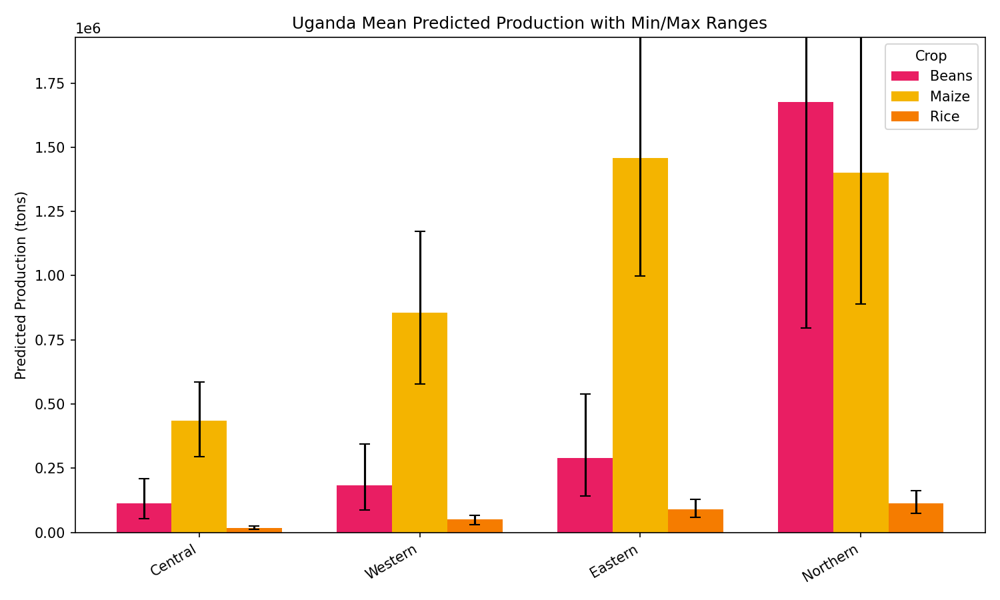
Figure: Mean Predicted Production with Min/Max – Uganda (Part 1)
Bar chart showing mean predicted production for maize, beans, and rice with min/max ranges.
Maize Maps
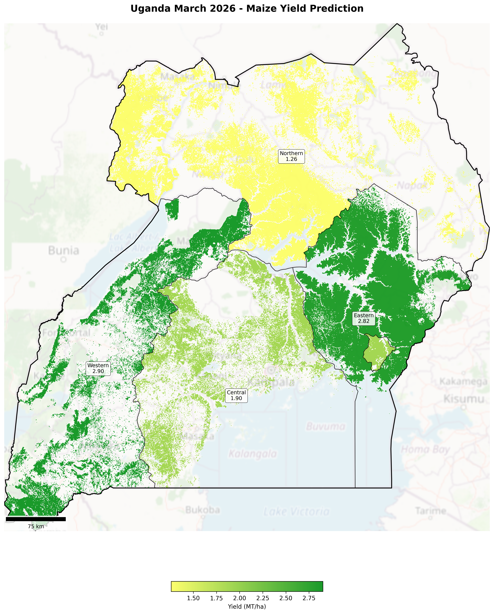
Regional Maize Yield Forecasts
In March 2026, Uganda's maize yield prediction shows the Western region as the top performer at 2.90 MgT/ha, while the Northern region has the lowest yield at 1.26 MgT/ha, indicating a significant north-south yield disparity. The extremes highlight a high productivity zone in the West and below-average yields in the North.
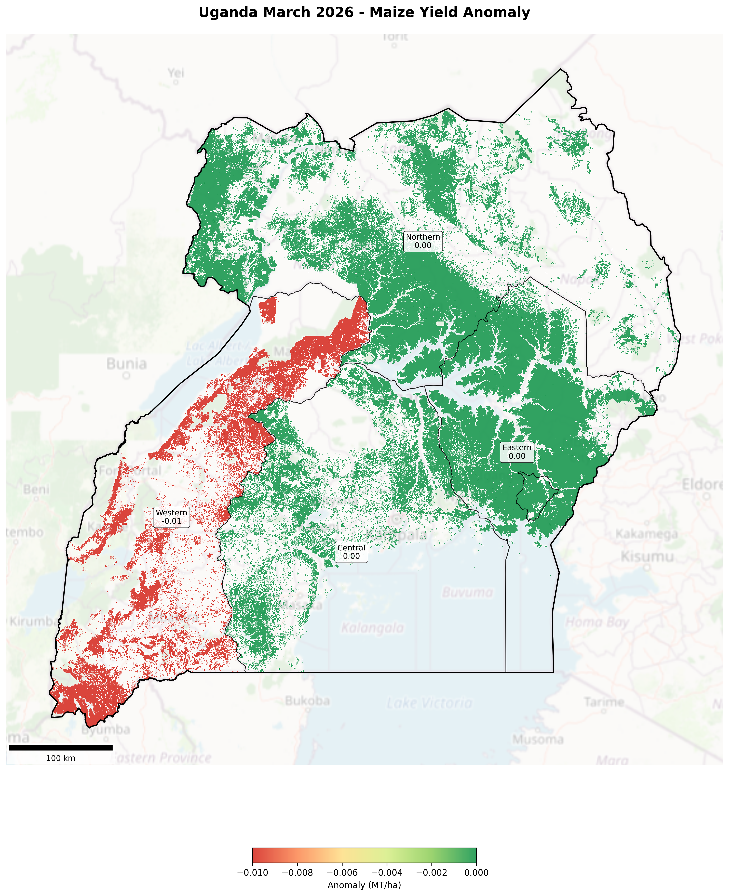
Regional Maize Yield Anomaly
In March 2026, Uganda's Western region shows the lowest maize yield anomaly at -0.01 MgT/ha, indicating below-average performance, while the Northern, Central, and Eastern regions exhibit neutral anomalies around 0.00 MgT/ha. The Western region represents a clear extreme with a notable negative yield anomaly.
Rice Maps
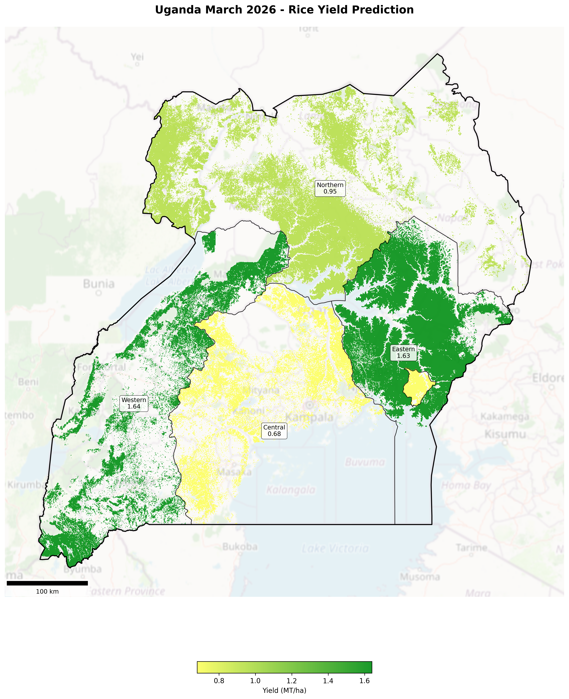
Regional Rice Yield Forecasts
In March 2026, Uganda's rice yield prediction shows the Western region as the top performer with 1.64 MgT/ha, while the Central region is the lowest at 0.68 MgT/ha, indicating significant regional yield disparities. The Eastern region also performs strongly at 1.63 MgT/ha, contrasting with the Northern region's lower yield of 0.95 MgT/ha.
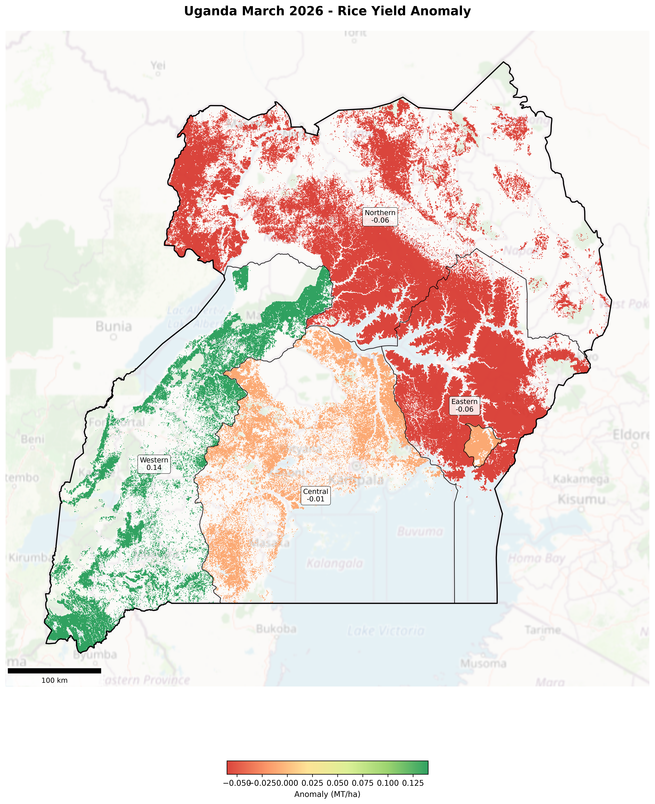
Regional Rice Yield Anomaly
In March 2026, Uganda's Western region showed the highest positive rice yield anomaly at +0.14 MgT/ha, while the Northern and Eastern regions experienced significant negative anomalies of -0.06 MgT/ha, indicating below-average yields. The Central region had a slight negative anomaly of -0.01 MgT/ha.
Beans Maps
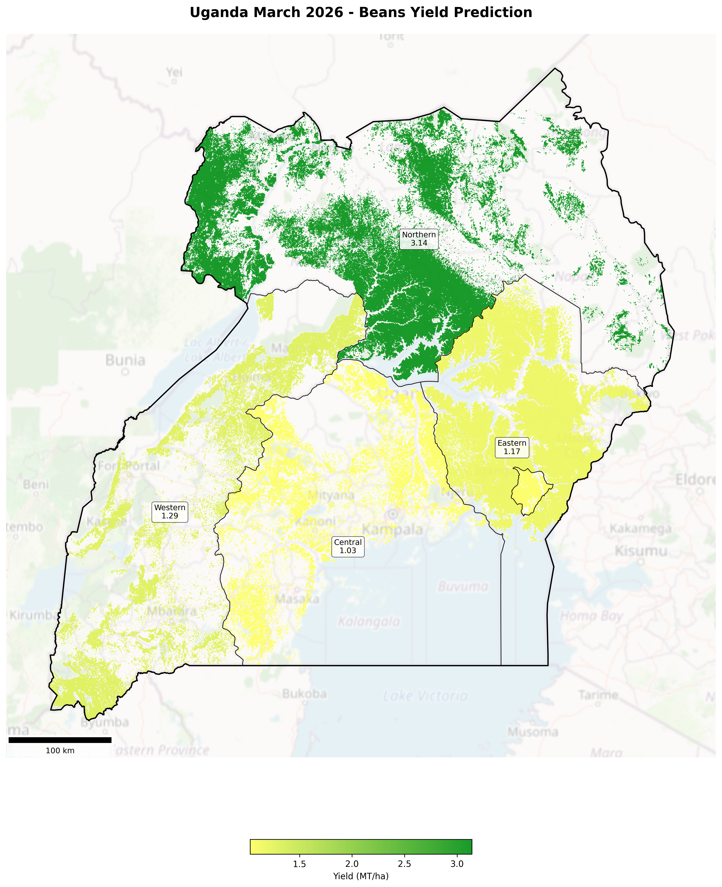
Regional Beans Yield Forecasts
In March 2026, Northern Uganda is the top-performing region for beans yield with 3.14 MgT/ha, significantly above the other regions. The Central region has the lowest yield prediction at 1.03 MgT/ha, indicating a notable yield disparity across the country.
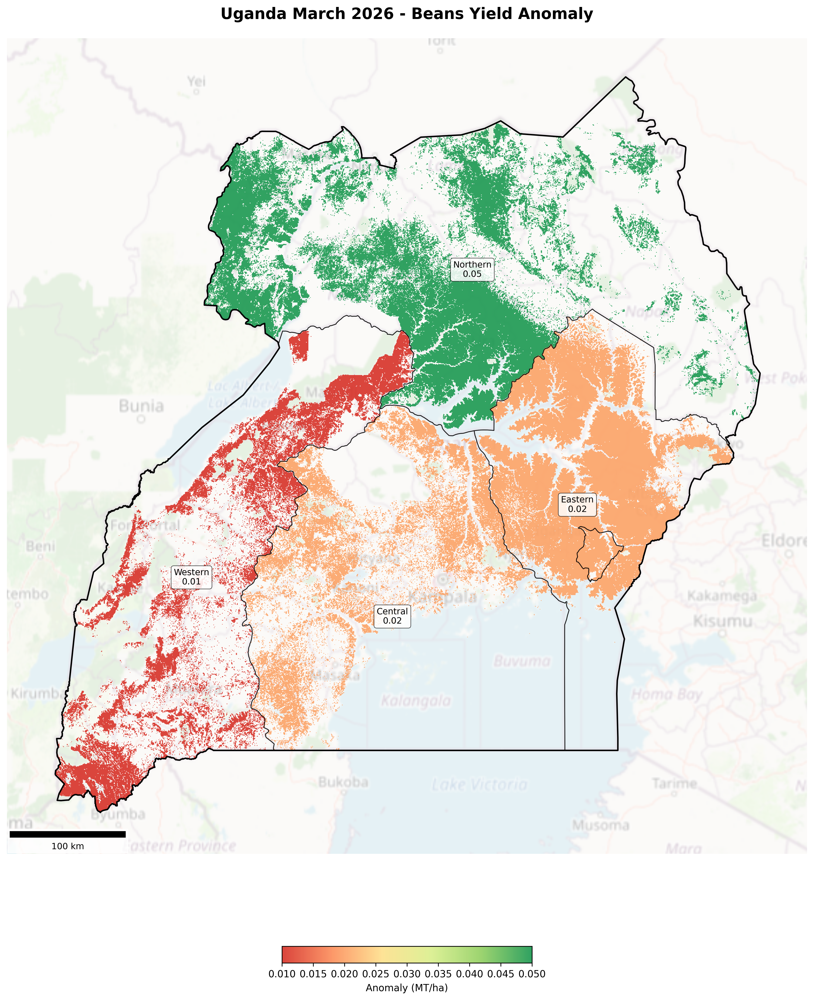
Regional Beans Yield Anomaly
In March 2026, Northern Uganda shows the highest positive beans yield anomaly at 0.05 MgT/ha, indicating above-average production, while the Western region exhibits the lowest positive anomaly at 0.01 MgT/ha. Areas in the southwest display notable negative anomalies, marking them as low-performing zones.
Production Narrative
The total production area for beans spans from 109,934 ha in Central to 533,916 ha in Northern Uganda, with Northern region predicting the highest production averaging 1,676,496 tons. For maize, Northern Uganda has the largest area (1,112,239 ha) with mean production forecasted at 1,401,421 tons; Eastern and Western regions also contribute significantly. Rice production areas are smaller, with Eastern and Western regions having approximately 55,490 ha and 31,670 ha respectively; Western Uganda leads rice production averaging 51,939 tons with a positive yield anomaly, while Northern and Eastern regions lag behind. Overall, beans in Northern Uganda are the top-performing crop by production volume, closely followed by maize in Northern and Eastern regions. Production uncertainty is evident from broad ranges in predicted yields and maximum production—especially for beans and maize in the Northern region given their higher standard errors, suggesting cautious optimism for yield outcomes.
Regional Production Forecast Tables
Rwanda – Regional Production Table
| Crop | Region | Predicted Yield (MT/ha) | Yield Anomaly | Min–Max Production (tons) | Condition |
|---|---|---|---|---|---|
| Beans | Amajyaruguru | 0.88 | 0.0 | 32613.0 – 129655.0 | Watch |
| Beans | Amajyepfo | 0.64 | 0.0 | 52476.0 – 208154.0 | Watch |
| Beans | Iburasirazuba | 0.53 | 0.0 | 62387.0 – 252146.0 | Watch |
| Beans | Iburengerazuba | 0.71 | -0.0 | 32109.0 – 128436.0 | Watch |
| Beans | Umujyi Wa Kigali | 1.69 | 0.01 | 10275.0 – 41633.0 | Favorable |
| Maize | Amajyaruguru | 1.74 | -0.01 | 45032.0 – 100611.0 | Watch |
| Maize | Amajyepfo | 1.64 | -0.01 | 93674.0 – 206974.0 | Watch |
| Maize | Iburasirazuba | 1.39 | -0.01 | 116670.0 – 259855.0 | Watch |
| Maize | Iburengerazuba | 1.6 | -0.01 | 51115.0 – 113147.0 | Watch |
| Maize | Umujyi Wa Kigali | 0.97 | -0.01 | 4220.0 – 9324.0 | Watch |
| Rice | Amajyepfo | 4.03 | -0.15 | 20572.0 – 57875.0 | Poor |
| Rice | Iburasirazuba | 4.08 | -0.37 | 32204.0 – 88186.0 | Poor |
| Rice | Iburengerazuba | 5.61 | 0.54 | 13834.0 – 39213.0 | Favorable |
| Rice | Umujyi Wa Kigali | 3.66 | -0.34 | 1506.0 – 4119.0 | Poor |
United Republic Of Tanzania – Regional Production Table
| Crop | Region | Predicted Yield (MT/ha) | Yield Anomaly | Min–Max Production (tons) | Condition |
|---|---|---|---|---|---|
| Beans | Arusha | 0.54 | 0.0 | 1103.0 – 4413.0 | Watch |
| Beans | Dar Es Salaam | 0.55 | 0.0 | 2.0 – 9.0 | Watch |
| Beans | Geita | 0.52 | 0.0 | 3962.0 – 15847.0 | Watch |
| Beans | Kagera | 0.64 | -0.0 | 2056.0 – 8154.0 | Watch |
| Beans | Kilimanjaro | 0.62 | 0.0 | 984.0 – 3833.0 | Watch |
| Beans | Manyara | 0.73 | 0.0 | 5540.0 – 21835.0 | Watch |
| Beans | Mara | 0.84 | -0.0 | 3706.0 – 14730.0 | Watch |
| Beans | Morogoro | 0.84 | 0.0 | 6055.0 – 23462.0 | Watch |
| Beans | Mwanza | 0.93 | 0.0 | 6940.0 – 27598.0 | Watch |
| Beans | Shinyanga | 1.11 | 0.01 | 11010.0 – 43407.0 | Favorable |
| Beans | Simiyu | 0.25 | 0.0 | 2361.0 – 9248.0 | Watch |
| Beans | Tanga | 0.81 | -0.0 | 1804.0 – 7073.0 | Watch |
| Beans | Dodoma | 0.55 | 0.0 | 6111.0 – 23974.0 | Watch |
| Beans | Iringa | 0.84 | 0.0 | 2238.0 – 8786.0 | Watch |
| Beans | Katavi | 0.31 | 0.0 | 1357.0 – 5247.0 | Watch |
| Beans | Kigoma | 0.67 | 0.0 | 3413.0 – 13654.0 | Watch |
| Beans | Lindi | 0.85 | 0.0 | 1021.0 – 4060.0 | Watch |
| Beans | Mbeya | 0.73 | 0.0 | 4759.0 – 18629.0 | Watch |
| Beans | Mtwara | 1.08 | 0.01 | 1106.0 – 4316.0 | Favorable |
| Beans | Njombe | 0.94 | 0.0 | 2193.0 – 9086.0 | Watch |
| Beans | Rukwa | 0.74 | 0.0 | 5542.0 – 21694.0 | Watch |
| Beans | Ruvuma | 0.73 | 0.0 | 2841.0 – 11122.0 | Watch |
| Beans | Singida | 0.57 | 0.0 | 5955.0 – 23601.0 | Watch |
| Beans | Tabora | 0.47 | 0.0 | 9094.0 – 35964.0 | Watch |
| Maize | Arusha | 1.51 | -0.0 | 31131.0 – 65998.0 | Watch |
| Maize | Dar Es Salaam | 1.2 | -0.01 | 50.0 – 113.0 | Watch |
| Maize | Geita | 1.9 | -0.01 | 145548.0 – 310889.0 | Watch |
| Maize | Kagera | 1.41 | -0.0 | 43988.0 – 96678.0 | Watch |
| Maize | Kaskazini Pemba | 0.97 | 0.0 | 27.0 – 61.0 | Watch |
| Maize | Kaskazini Unguja | 1.55 | -0.0 | 130.0 – 292.0 | Watch |
| Maize | Kilimanjaro | 2.04 | -0.0 | 32069.0 – 68446.0 | Watch |
| Maize | Kusini Pemba | 1.04 | 0.0 | 14.0 – 32.0 | Watch |
| Maize | Kusini Unguja | 1.36 | -0.0 | 57.0 – 127.0 | Watch |
| Maize | Manyara | 1.19 | -0.0 | 89659.0 – 190812.0 | Watch |
| Maize | Mara | 1.63 | -0.01 | 71732.0 – 154190.0 | Watch |
| Maize | Mjini Magharibi | 1.14 | -0.01 | 16.0 – 35.0 | Watch |
| Maize | Morogoro | 1.26 | -0.0 | 88623.0 – 188992.0 | Watch |
| Maize | Mwanza | 1.18 | -0.0 | 88798.0 – 187843.0 | Watch |
| Maize | Pwani | 1.19 | -0.0 | 5025.0 – 10951.0 | Watch |
| Maize | Shinyanga | 1.05 | -0.0 | 103061.0 – 221059.0 | Watch |
| Maize | Simiyu | 0.96 | -0.0 | 87439.0 – 188757.0 | Watch |
| Maize | Tanga | 1.22 | -0.0 | 26455.0 – 57598.0 | Watch |
| Maize | Dodoma | 0.57 | -0.01 | 54712.0 – 140925.0 | Watch |
| Maize | Iringa | 1.47 | -0.02 | 37501.0 – 85266.0 | Watch |
| Maize | Katavi | 1.37 | -0.01 | 57436.0 – 124445.0 | Watch |
| Maize | Kigoma | 1.38 | -0.01 | 70685.0 – 150691.0 | Watch |
| Maize | Lindi | 0.75 | -0.01 | 8261.0 – 20037.0 | Watch |
| Maize | Mbeya | 1.74 | -0.02 | 109351.0 – 239805.0 | Watch |
| Maize | Mtwara | 0.88 | -0.01 | 8265.0 – 20051.0 | Watch |
| Maize | Njombe | 1.61 | -0.02 | 38680.0 – 84359.0 | Watch |
| Maize | Rukwa | 1.98 | -0.02 | 146332.0 – 316122.0 | Watch |
| Maize | Ruvuma | 2.02 | -0.02 | 75021.0 – 166650.0 | Watch |
| Maize | Singida | 0.83 | -0.01 | 79351.0 – 191376.0 | Watch |
| Maize | Tabora | 1.09 | -0.01 | 204116.0 – 460719.0 | Watch |
| Rice | Arusha | 2.28 | -0.15 | 7606.0 – 20376.0 | Poor |
| Rice | Dar Es Salaam | 0.95 | -0.09 | 6.0 – 17.0 | Watch |
| Rice | Geita | 3.29 | -0.26 | 38005.0 – 108201.0 | Poor |
| Rice | Kagera | 1.68 | 0.11 | 7501.0 – 20520.0 | Favorable |
| Rice | Kaskazini Pemba | 1.09 | -0.03 | 4.0 – 12.0 | Watch |
| Rice | Kaskazini Unguja | 0.79 | -0.06 | 10.0 – 29.0 | Watch |
| Rice | Kilimanjaro | 2.79 | -0.19 | 7213.0 – 18865.0 | Poor |
| Rice | Kusini Pemba | 1.09 | 0.01 | 2.0 – 5.0 | Favorable |
| Rice | Kusini Unguja | 2.65 | -0.2 | 16.0 – 46.0 | Poor |
| Rice | Manyara | 2.24 | -0.16 | 27678.0 – 73602.0 | Poor |
| Rice | Mara | 1.78 | 0.11 | 11000.0 – 29773.0 | Favorable |
| Rice | Mjini Magharibi | 1.21 | -0.12 | 2.0 – 6.0 | Poor |
| Rice | Morogoro | 1.6 | -0.08 | 18282.0 – 47800.0 | Watch |
| Rice | Mwanza | 1.45 | -0.13 | 17868.0 – 46905.0 | Poor |
| Rice | Pwani | 1.27 | 0.07 | 793.0 – 2068.0 | Favorable |
| Rice | Shinyanga | 1.42 | -0.1 | 22645.0 – 59676.0 | Poor |
| Rice | Simiyu | 1.24 | -0.06 | 17081.0 – 48272.0 | Watch |
| Rice | Tanga | 1.48 | 0.09 | 4778.0 – 12302.0 | Favorable |
| Rice | Dodoma | 0.95 | -0.06 | 13898.0 – 43469.0 | Watch |
| Rice | Iringa | 1.66 | -0.15 | 6055.0 – 18447.0 | Poor |
| Rice | Katavi | 1.7 | -0.15 | 9902.0 – 30959.0 | Poor |
| Rice | Kigoma | 1.67 | -0.14 | 13577.0 – 37129.0 | Poor |
| Rice | Lindi | 0.87 | -0.08 | 1504.0 – 4356.0 | Watch |
| Rice | Mbeya | 1.82 | -0.17 | 16254.0 – 49103.0 | Poor |
| Rice | Mtwara | 0.81 | -0.08 | 1174.0 – 3522.0 | Watch |
| Rice | Njombe | 0.84 | -0.06 | 2956.0 – 8804.0 | Watch |
| Rice | Rukwa | 2.25 | -0.25 | 25104.0 – 72523.0 | Poor |
| Rice | Ruvuma | 1.37 | -0.1 | 7865.0 – 21960.0 | Poor |
| Rice | Singida | 1.01 | -0.07 | 14431.0 – 43292.0 | Watch |
| Rice | Tabora | 1.19 | -0.08 | 31725.0 – 95697.0 | Watch |
Zambia – Regional Production Table
| Crop | Region | Predicted Yield (MT/ha) | Yield Anomaly | Min–Max Production (tons) | Condition |
|---|---|---|---|---|---|
| Beans | Central | 0.53 | 0.0 | 8321.0 – 32002.0 | Watch |
| Beans | Copperbelt | 0.55 | 0.0 | 2323.0 – 8949.0 | Watch |
| Beans | Eastern | 0.47 | 0.0 | 7818.0 – 29571.0 | Watch |
| Beans | Luapula | 0.55 | 0.0 | 1570.0 – 6281.0 | Watch |
| Beans | Lusaka | 0.6 | 0.0 | 1122.0 – 4333.0 | Watch |
| Beans | Muchiga | 0.57 | 0.0 | 2324.0 – 9298.0 | Watch |
| Beans | North-Western | 0.67 | 0.0 | 1211.0 – 4769.0 | Watch |
| Beans | Northern | 0.62 | 0.0 | 2937.0 – 11747.0 | Watch |
| Beans | Southern | 0.46 | 0.0 | 5261.0 – 20567.0 | Watch |
| Beans | Western | 0.5 | 0.0 | 214.0 – 856.0 | Watch |
| Maize | Central | 2.98 | -0.03 | 678259.0 – 1459807.0 | Watch |
| Maize | Copperbelt | 2.68 | -0.02 | 165711.0 – 349937.0 | Watch |
| Maize | Eastern | 2.06 | -0.01 | 497329.0 – 1064138.0 | Watch |
| Maize | Luapula | 2.78 | -0.02 | 120854.0 – 253402.0 | Watch |
| Maize | Lusaka | 2.85 | -0.02 | 77430.0 – 171928.0 | Watch |
| Maize | Muchiga | 3.38 | -0.03 | 209319.0 – 447350.0 | Watch |
| Maize | North-Western | 2.38 | -0.01 | 65154.0 – 137230.0 | Watch |
| Maize | Northern | 2.86 | -0.02 | 209201.0 – 436926.0 | Watch |
| Maize | Southern | 2.34 | -0.02 | 396230.0 – 872220.0 | Watch |
| Maize | Western | 1.32 | -0.01 | 8066.0 – 18340.0 | Watch |
| Rice | Central | 1.02 | -0.09 | 5277.0 – 19550.0 | Watch |
| Rice | Copperbelt | 0.94 | -0.08 | 1774.0 – 4966.0 | Watch |
| Rice | Eastern | 0.88 | -0.1 | 4586.0 – 18217.0 | Poor |
| Rice | Luapula | 1.37 | -0.12 | 1856.0 – 5001.0 | Poor |
| Rice | Lusaka | 0.8 | -0.08 | 464.0 – 1856.0 | Watch |
| Rice | Muchiga | 1.45 | -0.12 | 2742.0 – 7388.0 | Poor |
| Rice | North-Western | 1.17 | -0.08 | 993.0 – 2694.0 | Watch |
| Rice | Northern | 1.1 | -0.09 | 2581.0 – 6755.0 | Watch |
| Rice | Southern | 0.85 | -0.09 | 3227.0 – 12279.0 | Watch |
| Rice | Western | 0.77 | -0.07 | 150.0 – 411.0 | Watch |
Kenya – Regional Production Table
| Crop | Region | Predicted Yield (MT/ha) | Yield Anomaly | Min–Max Production (tons) | Condition |
|---|---|---|---|---|---|
| Beans | Baringo | 1.36 | 0.01 | 16225.0 – 68450.0 | Favorable |
| Beans | Bomet | 1.08 | -0.01 | 568.0 – 2384.0 | Watch |
| Beans | Bungoma | 0.82 | 0.0 | 21444.0 – 91570.0 | Watch |
| Beans | Busia | 0.91 | 0.01 | 6687.0 – 27703.0 | Favorable |
| Beans | Elgeyo-Marakwet | 0.74 | 0.0 | 4615.0 – 19545.0 | Watch |
| Beans | Embu | 0.68 | 0.0 | 6263.0 – 26871.0 | Watch |
| Beans | Garissa | 0.91 | 0.01 | 336.0 – 1398.0 | Favorable |
| Beans | Homa Bay | 0.59 | 0.0 | 4950.0 – 20900.0 | Watch |
| Beans | Isiolo | 0.46 | 0.0 | 253.0 – 1114.0 | Watch |
| Beans | Kajiado | 0.22 | 0.0 | 3697.0 – 15124.0 | Watch |
| Beans | Kakamega | 0.32 | 0.0 | 7335.0 – 30317.0 | Watch |
| Beans | Kericho | 1.17 | -0.0 | 7928.0 – 33328.0 | Watch |
| Beans | Kiambu | 0.9 | 0.0 | 6364.0 – 27317.0 | Watch |
| Beans | Kilifi | 0.46 | 0.0 | 1833.0 – 7417.0 | Watch |
| Beans | Kirinyaga | 1.41 | 0.0 | 15812.0 – 67944.0 | Watch |
| Beans | Kisii | 0.71 | -0.0 | 579.0 – 2438.0 | Watch |
| Beans | Kisumu | 0.45 | 0.0 | 1501.0 – 6218.0 | Watch |
| Beans | Kitui | 1.1 | 0.01 | 67782.0 – 287075.0 | Favorable |
| Beans | Kwale | 0.71 | 0.0 | 3206.0 – 13407.0 | Watch |
| Beans | Laikipia | 0.44 | 0.0 | 8603.0 – 36993.0 | Watch |
| Beans | Lamu | 0.35 | 0.0 | 1290.0 – 5083.0 | Watch |
| Beans | Machakos | 0.73 | 0.0 | 19526.0 – 84612.0 | Watch |
| Beans | Makueni | 0.52 | 0.0 | 18142.0 – 77105.0 | Watch |
| Beans | Mandera | 0.58 | 0.0 | 237.0 – 1026.0 | Watch |
| Beans | Marsabit | 0.14 | 0.0 | 57.0 – 267.0 | Watch |
| Beans | Meru | 1.24 | 0.01 | 35191.0 – 146729.0 | Favorable |
| Beans | Migori | 0.54 | 0.0 | 12363.0 – 51926.0 | Watch |
| Beans | Mombasa | 0.44 | 0.0 | 8.0 – 32.0 | Watch |
| Beans | Murang'A | 0.77 | 0.0 | 7356.0 – 31736.0 | Watch |
| Beans | Nairobi | 0.5 | 0.0 | 297.0 – 1226.0 | Watch |
| Beans | Nakuru | 0.88 | 0.0 | 42665.0 – 183459.0 | Watch |
| Beans | Nandi | 0.2 | -0.0 | 1693.0 – 7524.0 | Watch |
| Beans | Narok | 0.58 | 0.0 | 25327.0 – 109100.0 | Watch |
| Beans | Nyamira | 0.95 | -0.0 | 198.0 – 839.0 | Watch |
| Beans | Nyandarua | 0.76 | 0.0 | 14844.0 – 64617.0 | Watch |
| Beans | Nyeri | 1.35 | -0.0 | 5957.0 – 25782.0 | Watch |
| Beans | Samburu | 0.45 | 0.0 | 566.0 – 2426.0 | Watch |
| Beans | Siaya | 1.03 | 0.0 | 6205.0 – 25595.0 | Watch |
| Beans | Taita Taveta | 0.55 | 0.0 | 3482.0 – 14597.0 | Watch |
| Beans | Tana River | 0.63 | 0.0 | 6578.0 – 28579.0 | Watch |
| Beans | Tharaka-Nithi | 0.23 | 0.0 | 2038.0 – 8337.0 | Watch |
| Beans | Uasin Gishu | 0.74 | 0.0 | 30246.0 – 131068.0 | Watch |
| Beans | Vihiga | 1.08 | -0.0 | 264.0 – 1104.0 | Watch |
| Beans | Wajir | 0.45 | 0.0 | 5.0 – 23.0 | Watch |
| Beans | West Pokot | 0.36 | 0.0 | 3507.0 – 14647.0 | Watch |
| Maize | Baringo | 2.07 | -0.02 | 58693.0 – 158020.0 | Watch |
| Maize | Bomet | 2.71 | -0.01 | 3908.0 – 8737.0 | Watch |
| Maize | Bungoma | 3.01 | -0.01 | 219033.0 – 495405.0 | Watch |
| Maize | Busia | 1.43 | -0.01 | 29298.0 – 64266.0 | Watch |
| Maize | Elgeyo-Marakwet | 3.42 | -0.02 | 58009.0 – 134011.0 | Watch |
| Maize | Embu | 1.0 | -0.01 | 23587.0 – 59167.0 | Watch |
| Maize | Garissa | 0.71 | -0.01 | 538.0 – 1867.0 | Watch |
| Maize | Homa Bay | 1.58 | -0.01 | 36640.0 – 80898.0 | Watch |
| Maize | Isiolo | 0.94 | -0.02 | 1022.0 – 3408.0 | Watch |
| Maize | Kajiado | 0.24 | -0.0 | 9310.0 – 23941.0 | Watch |
| Maize | Kakamega | 2.35 | 0.0 | 147069.0 – 326068.0 | Watch |
| Maize | Kericho | 2.71 | 0.0 | 51132.0 – 113303.0 | Watch |
| Maize | Kiambu | 1.14 | -0.01 | 21805.0 – 51594.0 | Watch |
| Maize | Kilifi | 0.92 | -0.01 | 7916.0 – 24572.0 | Watch |
| Maize | Kirinyaga | 0.9 | -0.0 | 27866.0 – 65021.0 | Watch |
| Maize | Kisii | 1.93 | -0.01 | 4408.0 – 9615.0 | Watch |
| Maize | Kisumu | 1.53 | -0.01 | 13719.0 – 30973.0 | Watch |
| Maize | Kitui | 0.33 | -0.0 | 44706.0 – 134118.0 | Watch |
| Maize | Kwale | 1.22 | -0.01 | 12303.0 – 36331.0 | Watch |
| Maize | Laikipia | 1.35 | -0.01 | 70645.0 – 170228.0 | Watch |
| Maize | Lamu | 1.17 | -0.02 | 8556.0 – 28821.0 | Watch |
| Maize | Machakos | 0.84 | -0.01 | 57368.0 – 146346.0 | Watch |
| Maize | Makueni | 0.44 | -0.0 | 37394.0 – 98720.0 | Watch |
| Maize | Mandera | 0.62 | -0.02 | 451.0 – 1839.0 | Watch |
| Maize | Marsabit | 0.72 | -0.02 | 548.0 – 2229.0 | Watch |
| Maize | Meru | 1.13 | -0.0 | 82615.0 – 199455.0 | Watch |
| Maize | Migori | 1.52 | -0.01 | 97853.0 – 212341.0 | Watch |
| Maize | Mombasa | 0.81 | -0.02 | 33.0 – 97.0 | Watch |
| Maize | Murang'A | 0.95 | -0.01 | 24952.0 – 58222.0 | Watch |
| Maize | Nairobi | 1.23 | -0.02 | 1940.0 – 4798.0 | Watch |
| Maize | Nakuru | 2.71 | -0.03 | 363006.0 – 833648.0 | Watch |
| Maize | Nandi | 2.64 | 0.0 | 63648.0 – 139951.0 | Watch |
| Maize | Narok | 1.43 | -0.01 | 179254.0 – 393202.0 | Watch |
| Maize | Nyamira | 1.28 | 0.0 | 750.0 – 1634.0 | Watch |
| Maize | Nyandarua | 2.49 | -0.02 | 135634.0 – 311872.0 | Watch |
| Maize | Nyeri | 1.78 | -0.01 | 21451.0 – 50245.0 | Watch |
| Maize | Samburu | 1.72 | -0.02 | 4748.0 – 14458.0 | Watch |
| Maize | Siaya | 1.76 | -0.01 | 28905.0 – 63694.0 | Watch |
| Maize | Taita Taveta | 1.45 | -0.02 | 20669.0 – 57238.0 | Watch |
| Maize | Tana River | 1.68 | -0.03 | 36353.0 – 125215.0 | Watch |
| Maize | Tharaka-Nithi | 1.19 | -0.01 | 22729.0 – 66721.0 | Watch |
| Maize | Trans Nzoia | 4.23 | -0.04 | 316867.0 – 714710.0 | Watch |
| Maize | Turkana | 0.68 | -0.01 | 407.0 – 1615.0 | Watch |
| Maize | Uasin Gishu | 4.21 | -0.04 | 484231.0 – 1104482.0 | Watch |
| Maize | Vihiga | 1.2 | 0.0 | 816.0 – 1778.0 | Watch |
| Maize | Wajir | 0.39 | -0.01 | 8.0 – 34.0 | Watch |
| Maize | West Pokot | 1.83 | -0.01 | 44903.0 – 112258.0 | Watch |
| Rice | Baringo | 3.22 | -0.26 | 994.0 – 3636.0 | Poor |
| Rice | Bungoma | 1.88 | -0.15 | 1352.0 – 4961.0 | Poor |
| Rice | Busia | 2.68 | -0.19 | 525.0 – 1904.0 | Poor |
| Rice | Elgeyo-Marakwet | 1.77 | -0.14 | 302.0 – 1092.0 | Poor |
| Rice | Embu | 0.53 | -0.05 | 115.0 – 476.0 | Watch |
| Rice | Garissa | 1.69 | -0.07 | 11.0 – 55.0 | Watch |
| Rice | Homa Bay | 1.84 | -0.12 | 418.0 – 1485.0 | Poor |
| Rice | Kakamega | 2.12 | -0.14 | 1274.0 – 4658.0 | Poor |
| Rice | Kiambu | 0.45 | -0.04 | 81.0 – 331.0 | Watch |
| Rice | Kilifi | 1.99 | -0.09 | 165.0 – 709.0 | Watch |
| Rice | Kirinyaga | 4.41 | -0.36 | 1373.0 – 5082.0 | Poor |
| Rice | Kisumu | 3.69 | -0.24 | 326.0 – 1172.0 | Poor |
| Rice | Kwale | 2.11 | -0.09 | 198.0 – 860.0 | Watch |
| Rice | Lamu | 1.95 | -0.05 | 128.0 – 628.0 | Watch |
| Rice | Meru | 1.18 | -0.1 | 873.0 – 3167.0 | Poor |
| Rice | Migori | 1.63 | -0.08 | 982.0 – 3558.0 | Watch |
| Rice | Murang'A | 1.21 | -0.11 | 328.0 – 1198.0 | Poor |
| Rice | Nakuru | 0.43 | -0.04 | 556.0 – 2117.0 | Watch |
| Rice | Nyandarua | 0.32 | -0.03 | 173.0 – 650.0 | Watch |
| Rice | Nyeri | 0.53 | 0.0 | 60.0 – 227.0 | Watch |
| Rice | Siaya | 3.76 | -0.21 | 602.0 – 2138.0 | Poor |
| Rice | Taita Taveta | 3.93 | -0.35 | 558.0 – 2274.0 | Poor |
| Rice | Tana River | 2.12 | -0.14 | 405.0 – 2096.0 | Poor |
| Rice | Tharaka-Nithi | 1.0 | -0.1 | 207.0 – 817.0 | Poor |
| Rice | Vihiga | 1.52 | 0.14 | 7.0 – 31.0 | Favorable |
| Rice | West Pokot | 2.15 | -0.18 | 465.0 – 2024.0 | Poor |
Malawi – Regional Production Table
| Crop | Region | Predicted Yield (MT/ha) | Yield Anomaly | Min–Max Production (tons) | Condition |
|---|---|---|---|---|---|
| Beans | Central Region | 0.51 | 0.0 | 43521.0 – 179526.0 | Watch |
| Beans | Northern Region | 0.68 | 0.0 | 21445.0 – 87120.0 | Watch |
| Beans | Southern Region | 0.84 | 0.0 | 48828.0 – 190549.0 | Watch |
| Maize | Central Region | 2.39 | -0.02 | 1397576.0 – 3083684.0 | Watch |
| Maize | Northern Region | 2.16 | -0.01 | 463169.0 – 1036299.0 | Watch |
| Maize | Southern Region | 1.47 | -0.0 | 556631.0 – 1255381.0 | Watch |
| Rice | Central Region | 1.37 | -0.15 | 29632.0 – 87317.0 | Poor |
| Rice | Northern Region | 1.35 | -0.13 | 11097.0 – 31100.0 | Poor |
| Rice | Southern Region | 1.26 | -0.12 | 14012.0 – 51118.0 | Poor |
Uganda – Regional Production Table
| Crop | Region | Predicted Yield (MT/ha) | Yield Anomaly | Min–Max Production (tons) | Condition |
|---|---|---|---|---|---|
| Beans | Central | 1.03 | 0.02 | 52768.0 – 208875.0 | Favorable |
| Beans | Eastern | 1.17 | 0.02 | 141581.0 – 539000.0 | Favorable |
| Beans | Northern | 3.14 | 0.05 | 795535.0 – 3214174.0 | Favorable |
| Beans | Western | 1.29 | 0.01 | 87892.0 – 343062.0 | Favorable |
| Maize | Central | 1.9 | -0.0 | 295427.0 – 586273.0 | Watch |
| Maize | Eastern | 2.82 | -0.0 | 998646.0 – 1986943.0 | Watch |
| Maize | Northern | 1.26 | -0.0 | 889791.0 – 1935296.0 | Watch |
| Maize | Western | 2.9 | -0.01 | 578813.0 – 1172393.0 | Watch |
| Rice | Central | 0.68 | -0.01 | 10806.0 – 23822.0 | Watch |
| Rice | Eastern | 1.63 | -0.06 | 58819.0 – 129847.0 | Watch |
| Rice | Northern | 0.95 | -0.06 | 72760.0 – 163412.0 | Watch |
| Rice | Western | 1.64 | 0.14 | 30403.0 – 65874.0 | Favorable |
Model Description and Parameters
Crop Conditions Classes
| Class | Definition |
|---|---|
| Exceptional | Conditions are much better than average at the time of reporting. Used only during the grain-filling through harvest stages. |
| Favorable | Conditions range from slightly below to slightly above-average at reporting time. |
| Watch | Near average but with risk to final yields; recovery possible if conditions improve. |
| Poor | Well below average; yields likely 10–25% below average with limited recovery potential. |
Data Sources
| Data Type | Source |
|---|---|
| NDVI | UMD GLAM system |
| ESI | NASA SERVIR Global |
| Precipitation | CHIRPS (historical), NOAA CPC |
| Precipitation Forecast | CHIRPS-GEFS |
| Soil Moisture | NASA–USDA Global (SMOS) |
| Temperature | NOAA CPC |
Model Performance Summary
Our yield prediction model is evaluated using historical data to assess accuracy and reliability. Performance metrics are calculated by comparing predicted yields against actual reported yields from previous seasons. The ensemble approach combines multiple remote sensing inputs (NDVI, ESI, precipitation, soil moisture) across a random forest architecture trained per country and crop.
Metrics Explanation
- R² Score: Coefficient of determination (0–1); values above 0.7 indicate strong predictive power.
- RMSE: Root Mean Square Error — average magnitude of prediction errors in MT/ha. Lower is better.
- MAE: Mean Absolute Error — average absolute difference between predicted and actual yields in MT/ha. Lower is better.
Disclaimer
The opinions expressed in this report are those of the authors and do not necessarily reflect the official policy or position of AGRA, its employees, partners, or affiliates. While every effort has been made to ensure the accuracy and completeness of the information, we assume no responsibility for any errors or omissions.
Project Lead: Dr. Catherine Nakalembe
Team: Xylem Lab / NASA Harvest–Africa Team
Date: March